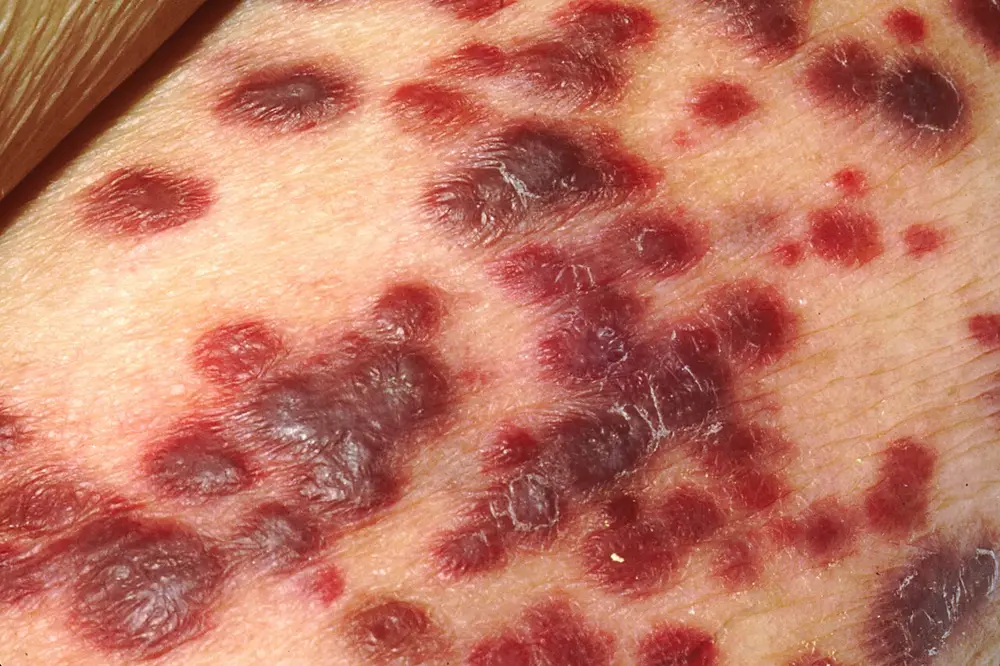

DX.8 — Infection par le VIH
1. Définition et sémantique
Le virus de l'immunodéficience humaine (VIH) est un agent qui attaque le système immunitaire, donc les défenses de l'organismew985243-9. Le VIH ne se guérit pas, mais il se traite bien, car les médicaments actuels amènent le virus à un niveau indétectablew985243-9w985243-10. Le terme « infection par le VIH » désigne donc l'état d'une personne qui porte le virus, avec ou sans symptôme.
Le syndrome de l'immunodéficience acquise (sida) correspond à la complication tardive de cette infectionw446bbb-2. L'Office fédéral de la santé publique (OFSP) est la source qui réserve le mot « sida » à un stade précis. Ce stade est atteint lorsque le système immunitaire est si affaibli qu'une maladie infectieuse ou tumorale définissant le sida est diagnostiquéew446bbb-4. Ce stade avancé se définit par des infections opportunistes, des cancers, un syndrome de dénutrition ou une encéphalopathie liée au VIHwc9a494-486. Une personne séropositive n'a donc pas un sida par le seul fait de son diagnostic.
Sans traitement, l'infection évolue généralement vers le sida après une phase de latence asymptomatique d'une valeur médiane de 9 à 10 answc9a494-485. Le traitement antirétroviral change cette histoire, car il peut ralentir ou arrêter la progression de la maladiewc9a494-486. Il reste toutefois nécessaire à vie, puisque l'infection demeure mortelle quand les traitements ne sont pas suivis de façon systématiquew446bbb-5.
Deux types viraux existent : le VIH-1 et le VIH-2w5984aa-8. Le VIH-2 pose des problèmes particuliersw2a9a6a-13. Il résiste à plusieurs classes d'antirétroviraux, donc il exige des techniques propresw2a9a6a-13. évite plusieurs confusions fréquentes à l'examen.
Le VIH-2 est naturellement résistant aux inhibiteurs non nucléosidiques de la transcriptase inversew5984aa-23. En effet, l'European AIDS Clinical Society (EACS) lui consacre une section nouvelle, qui figure dans sa version 13.0w5984aa-8. Les schémas de première intention reposent sur un inhibiteur d'intégrase de deuxième générationw5984aa-8.
La Haute Autorité de santé (HAS) française relève que la charge virale du VIH-2 est souvent spontanément indétectable, ce qui impose plusieurs critères pour juger l'efficacité du traitementw2a9a6a-13. Un avis d'expert est recommandé, en particulier lors d'un échec thérapeutiquew2a9a6a-13.
Le vocabulaire de la charge virale suit des seuils précis. L'information professionnelle suisse de Biktarvy® définit la suppression par un ARN du VIH-1 inférieur à 50 copies/mL depuis au moins 6 mois sous traitement stableaips-66834-1. La suppression virologique décrit donc un état mesuré, avec un seuil et une durée, et non une guérison.
La charge virale « indétectable » dépend de la limite de détection du test, alors que les recommandations suisses parlent d'un résultat inférieur à 50 copies/mLwd99f25-5. Le compte rendu doit donc nommer la méthode utilisée.
Le diagnostic de laboratoire dépasse la lecture d'un seul test réactif. La directive suisse de dépistage prévoit une interprétation globale, que le laboratoire formule en trois états : VIH NÉGATIF, VIH POSITIF ou VIH DOUTEUXwedbb38-21wedbb38-22. Le médecin annonce donc le résultat final, car un résultat intermédiaire ne doit jamais être annoncéwedbb38-19.
Plusieurs sigles reviennent dans tout le chapitre. les définit avant leur emploi, afin que chaque abréviation soit lue sans ambiguïté.
Les sigles ci-dessous sont développés lettre par lettre et reliés à leur source.
| Sigle | Développement | Ce que le médecin retient |
|---|---|---|
| VIH | Virus de l'immunodéficience humaine | Virus qui détruit les cellules T auxiliairesw985243-9 |
| sida | Syndrome de l'immunodéficience acquise | Complication tardive de l'infectionw446bbb-2 |
| OFSP | Office fédéral de la santé publique | Autorité qui édicte la directive de dépistagewedbb38-5 |
| CNR | Centre national de référence pour les rétrovirus | Traite les cas douteux et évalue la récencewedbb38-32wedbb38-33 |
| TAR | Traitement antirétroviral | Rend la charge virale inférieure à 50 copies/mLwd99f25-5 |
| PrEP | Prophylaxie pré-exposition | Médicament pris avant une expositionwd3b7d1-15 |
| PEP | Prophylaxie post-exposition | Traitement d'urgence après une expositionwd3b7d1-13 |
| PVVIH | Personne vivant avec le VIH | Terme utilisé par la HASw2a9a6a-5 |
2. Épidémiologie (Suisse, puis Europe)
En Suisse, 318 nouveaux cas de VIH ont été déclarés à l'OFSP pour l'année 2024, ce qui correspond à une incidence de 3,5 pour 100 000 habitantswad7cf6-50. Ce chiffre recule de 10,9 % par rapport à 2023, année qui comptait 357 caswad7cf6-50. Il reste inférieur au niveau d'avant la pandémie, car 428 cas avaient été déclarés en 2019wad7cf6-52.
Cette baisse s'explique en partie par la « cascade du VIH » : presque toutes les personnes porteuses connaissent leur infection et reçoivent rapidement un traitement efficacewad7cf6-49. L'usage croissant de la prophylaxie pré-exposition y contribue aussi, puisque 6968 personnes ont participé en 2024 au programme SwissPrEParedwad7cf6-52.
Cette incidence est une fréquence populationnelle de diagnostics déclarés. Elle ne donne pas la probabilité d'une infection chez la personne qui consulte pour des sueurs, car le dénominateur reste inconnu. Ainsi, doit garder chaque valeur avec sa date et sa source.
Les chiffres ci-dessous sont des diagnostics déclarés et non des acquisitions de l'année.
| Indicateur | Valeur | Année | Source |
|---|---|---|---|
| Cas déclarés | 318, soit 3,5 pour 100 000 habitantswad7cf6-50 | 2024 | BAG-Bulletin 44/2025 |
| Cas déclarés | 352, soit 4,0 pour 100 000 habitantsw192b8b-16 | 2023 | Bulletin OFSP 48/2024 |
| Personnes vivant avec le VIH | environ 17 700, dont environ 16 400 (93 %) diagnostiquéeswc9a494-269 | estimation OFSP | Guide de la déclaration |
| Personnes diagnostiquées sous traitement | 98 %wad7cf6-24 | 2024 | BAG-Bulletin 44/2025 |
| Personnes traitées avec charge virale inférieure à 50 copies/mL | 96 %wad7cf6-24 | 2024 | BAG-Bulletin 44/2025 |
| Cas de sida cumulés | 10 228w446bbb-6 | fin 2022 | OFSP |
Le VIH touche surtout les hommes : 73,0 % des cas déclarés en 2024 concernaient des hommeswad7cf6-52. Ainsi, l'incidence était de 5,2 pour 100 000 chez les hommes et de 1,8 chez les femmeswad7cf6-52. Les hommes ayant des rapports sexuels avec des hommes représentaient 101 cas, soit 31,8 %, les hommes hétérosexuels 48 cas et les femmes hétérosexuelles 42 caswad7cf6-57.
Calculé sur les cinq dernières années, l'âge médian au diagnostic était de 36 ans chez les hommes ayant des rapports sexuels avec des hommeswad7cf6-52. Il était de 42 ans chez les femmes hétérosexuelles et de 43 ans chez les hommes hétérosexuelswad7cf6-52. Cependant, les incidences régionales variaient de 0 à 6,2 pour 100 000 habitants, avec les valeurs les plus hautes à Zurich et dans la région lémaniquewad7cf6-55wad7cf6-50.
Le diagnostic reste parfois tardif : en 2024, 59 cas, soit 18,6 %, correspondaient à un test tardif, et 36 cas, soit 11,3 %, à une infection aiguëwad7cf6-71. Les diagnostics tardifs sont plus fréquents après un contact hétérosexuel qu'après un contact entre hommeswad7cf6-73. Un diagnostic tardif est grave, car l'infection est alors très avancée et les premiers symptômes du sida sont attendus ou déjà présentswad7cf6-69.
En 2022, l'OFSP estimait que 7 % des personnes vivant avec le VIH en Suisse n'étaient pas diagnostiquéesw1d8720-12. Le dépistage proposé à l'initiative du médecin, même sans soupçon direct, peut donc accélérer le diagnostic dans ces groupeswad7cf6-75. Une cinquantaine de diagnostics de sida sont posés chaque année, la plupart du temps chez des personnes dont l'infection a été détectée tardivement, car le virus a alors progressé sans traitementw446bbb-6.
Dans le monde, environ 41 millions de personnes étaient infectées ou atteintes du sida en 2024w446bbb-2. s'organise en quatre phases dont la durée varie d'une personne à l'autre.
Sans traitement, l'infection évolue généralement en quatre phases, dont la durée diffère d'une personne à l'autrew985243-11. La période asymptomatique peut durer de quelques mois à plus de 15 answ985243-11.
| Phase | Description | Source |
|---|---|---|
| Primo-infection | Symptômes pseudo-grippaux deux à quatre semaines après l'infectionw985243-12 | Aide Suisse contre le Sida |
| Latence asymptomatique | Les symptômes disparaissent, puis le virus évolue sans se faire remarquerw985243-13 | Aide Suisse contre le Sida |
| Phase symptomatique | Zona, ganglions permanents, fortes sueurs nocturnes, diarrhées, fièvrew985243-14 | Aide Suisse contre le Sida |
| Sida | Maladies définissant le sida ; espérance de vie de quelques mois à trois ans sans traitementw985243-15 | Aide Suisse contre le Sida |
Environ 70 % des personnes infectées présentent des symptômes pseudo-grippaux une à quatre semaines après l'infectionwc9a494-270. Ces symptômes durent 7 à 10 jours et surviennent quand la charge virale est la plus élevéewc9a494-271. Les symptômes de la première phase disparaissent donc spontanément, ce qui ne signifie pas que l'infection disparaîtw985243-13.
Les rapports sexuels non protégés exposent davantage lorsque le partenaire appartient à un groupe de forte prévalencewc9a494-271. Ces groupes comprennent les hommes ayant des rapports sexuels avec des hommes, les personnes originaires de pays de forte prévalence et celles qui s'injectent des drogueswc9a494-271. Le médecin explore l'exposition de chaque personne et ne déduit pas le statut du genre, de l'orientation ou de l'origine.
3. Physiopathologie
Le VIH affaiblit le système immunitaire en mettant hors d'état de nuire des cellules immunitaires importantes, les cellules T auxiliairesw985243-9. Après la transmission, le virus est capable d'entrer dans ces cellules. Il les amène alors à produire d'autres virus, au lieu de remplir leur fonction initialew985243-9. Les lymphocytes T CD4 diminuent donc, et l'organisme ne combat plus les bactéries, les champignons ou les virus qu'un système intact vaincrait sans difficultéw985243-10.
La chaîne de l'infection se lit en quatre étages : la réplication virale, la perte des lymphocytes T CD4, l'infection opportuniste puis le sida. À chaque étage correspond un examen et un traitement, que rassemble.
Chaque perturbation est reliée à l'examen qui la montre et au traitement qui la corrige.
| Perturbation | Examen qui la montre | Traitement |
|---|---|---|
| Réplication virale élevée, surtout en primo-infectionwc9a494-271 | Charge virale en copies/mLw2a9a6a-17 | Association antirétroviralew2a9a6a-10 |
| Perte des lymphocytes T CD4w985243-9 | Numération des CD4w2a9a6a-18 | Prophylaxie des infections opportunistesw2a9a6a-18 |
| Virus résistantaips-66834-77 | Test de résistance génotypiquewedbb38-11 | Schéma actif adaptéw2a9a6a-15 |
| Réaction inflammatoire à une infection latenteaips-66834-16 | Évaluation de tout symptôme inflammatoireaips-66834-16 | Traitement de l'infection en causeaips-66834-16 |
Le virus est détectable dans le sang 10 à 12 jours après l'infection au plus tôt, alors que les anticorps apparaissent habituellement après 2 à 6 semaineswc9a494-271. Cette cinétique explique la fenêtre diagnostique : un test d'anticorps seul reste négatif au début, tandis que le test moléculaire détecte le génome viralwc9a494-271. Les tests de 4e génération ont une fenêtre sérologique de 6 semaineswedbb38-15.
Le traitement agit donc sur des étapes précises du cycle viral. Le bictégravir inhibe le transfert de brins de l'intégrase, étape essentielle à l'intégration de l'ADN rétroviralaips-66834-71. L'emtricitabine et le ténofovir alafénamide inhibent la transcriptase inverse et arrêtent la chaîne d'ADN viralaips-66834-71aips-66834-72. Le dolutégravir se lie au site actif de l'intégrase et bloque la même étapeaips-67313-72.
Le ténofovir alafénamide pénètre dans les cellules, où il est activé et s'accumule dans les lymphocytes, qui sont les cellules cibles du VIHaips-66834-72. L'association de plusieurs composantes agit donc à plusieurs étapes. Elle limite l'apparition de résistances lorsque chaque composante reste active et que les prises sont régulières.
La résistance vient de mutations précises, que le laboratoire peut identifier. En culture cellulaire, les mutations M184V et M184I de la transcriptase inverse réduisent la sensibilité à l'emtricitabineaips-66834-77. Un patient qui oublie souvent ses comprimés sélectionne ainsi des virus résistants, ce qui justifie le test de résistance dès le bilan initialwedbb38-11.
Le syndrome de restauration immunitaire s'explique par la récupération des défenses. En effet, chez une personne très immunodéprimée, le début du traitement peut déclencher une réaction inflammatoire contre une infection opportuniste asymptomatique ou résiduelleaips-66834-16. Les exemples cités sont la rétinite à cytomégalovirus, les infections mycobactériennes et la pneumonie à Pneumocystis jiroveciiaips-66834-16. Ces réactions surviennent classiquement dans les premières semaines ou les premiers mois du traitementaips-67313-12.
La maladie de Basedow, maladie auto-immune, a été rapportée après plusieurs mois de traitementaips-66834-60. Ainsi, doit être replacée dans ce cadre : aucun mécanisme unique du VIH ne les explique.
Les sueurs nocturnes figurent parmi les signes d'une primo-infection, seules ou accompagnées de fièvre, de fatigue et de ganglions gonflésw0211eb-10. Elles figurent ainsi parmi les signes de la phase symptomatique, avec la diarrhée prolongée et la fièvrew985243-14.
L'information professionnelle suisse de Dovato mentionne les sueurs nocturnes comme effet indésirable occasionnel, observé chez un seul participant de l'étude TANGOaips-67313-66. Elle ne précise ni mécanisme ni délai. Devant des sueurs nouvelles sous traitement, le médecin cherche donc d'abord une infection opportunistique, une restauration immunitaire ou une autre cause avant d'incriminer le médicament.
L'information professionnelle de Biktarvy contient une règle différente : tout symptôme inflammatoire doit être évalué lors d'une restauration immunitaireaips-66834-16. La mention d'un produit ne se transpose donc pas à l'autre.
Le virus persiste malgré le traitement, car l'association freine la réplication sans retirer le matériel viral déjà intégré. L'arrêt d'une composante peut provoquer un rebond. Chez une personne co-infectée par le virus de l'hépatite B (VHB), l'arrêt de Biktarvy peut provoquer une exacerbation aiguë sévère de l'hépatiteaips-66834-9.
4. Démarche diagnostique
Le diagnostic de VIH se place ici au rang E5 de la liste du lot, derrière les urgences vitales. Le médecin doit donc d'abord chercher une détresse respiratoire, une atteinte neurologique ou visuelle et une réaction médicamenteuse sévère. Ces situations imposent une évaluation immédiate de l'organe, quel que soit le statut sérologique. Le piège est d'attribuer toute fièvre, dyspnée ou confusion au seul VIH.
Une infection neuroméningée tuberculeuse ou cryptococcique peut modifier le moment d'introduction des antirétrovirauxw5984aa-39w5984aa-40. La pneumonie à Pneumocystis jirovecii figure parmi les infections opportunistes qui compliquent l'immunodépressionaips-66834-16. Une éruption avec fièvre sous Dovato impose l'arrêt immédiat des produits suspects, car un retard peut mettre en jeu le pronostic vitalaips-67313-8.
Le dépistage du VIH se propose ensuite selon l'exposition et le syndrome, et non parce que des sueurs restent inexpliquées. Un syndrome pseudo-grippal peut évoquer une primo-infection s'il survient dans les deux premières semaines après une expositionw0211eb-10. Il associe sueurs nocturnes, fièvre, éruption et ganglions gonflésw0211eb-10. Ces symptômes ne sont pas spécifiques : ils peuvent indiquer une infection par le VIH, mais ce n'est pas systématiquew0211eb-11.
Le diagnostic différentiel dépend de la phase et de l'organe atteint. Ainsi, classe les hypothèses de la liste du lot, les graves d'abord, avec le signe qui tranche, le piège et la conduite.
Une infection par le VIH peut coexister avec chacune de ces affections et ne la remplace pas.
| Diagnostic | Élément qui tranche | Piège | Conduite si positif |
|---|---|---|---|
| DX.5 — Syndrome coronarien aigu 🚩 | Douleur thoracique, ECG et troponine | Attendre le statut VIH | Urgence cardiologique immédiate |
| DX.6 — Endocardite infectieuse 🚩 | Souffle nouveau, hémocultures, échocardiographie | Injection de drogue, exposition commune | Hospitalisation et antibiothérapie ciblée |
| DX.7 — Tuberculose 🚩 | Toux prolongée, imagerie, microbiologie | Attribuer les sueurs au seul VIH | Traitement coordonné ; rifampicine contre-indiquée avec Biktarvyaips-66834-7 |
| DX.9 — Lymphome de Hodgkin 🚩 | Biopsie ganglionnaire | Attribuer toute adénopathie au VIH | Orientation oncologique |
| DX.4 — Hyperthyroïdie | TSH et T4 libre | Maladie de Basedow possible après restauration immunitaireaips-67313-12 | Traitement endocrinien |
| DX.10 — Phéochromocytome | Dosage biochimique spécifique | Sueurs paroxystiques sans lien avec le virus | Orientation spécialisée |
| DX.3 — Hypoglycémie | Glycémie capillaire pendant l'épisode | Sueurs adrénergiques sans fièvre | Resucrage et recherche de cause |
| DX.2 — Symptômes vasomoteurs de la ménopause | Âge et cycle | Sueurs aussi rapportées sous traitementaips-67313-66 | Prise en charge gynécologique |
| DX.1 — Hyperhidrose focale primaire | Sueurs localisées, bilatérales, diurnes | Test VIH sans exposition | Traitement local |
Une charge virale indétectable rend certaines complications moins probables, mais elle n'exclut ni une maladie commune ni une infection ou une tumeur. Les patients sous Dovato gardent un risque d'infections opportunistes et d'autres complications de l'infectionaips-67313-16. Une personne qui tousse et désature doit donc être évaluée, même si son dernier résultat virologique était rassurant.
Un test négatif obtenu plus de 6 semaines après l'exposition peut rendre le VIH peu probablewedbb38-15wedbb38-44. Il ne dispense pas de chercher les autres diagnostics. À l'inverse, un test négatif avant la fin de cette fenêtre ne clôt pas la question, et un test moléculaire parallèle s'impose si une primo-infection est suspectéewedbb38-24.
5. Anamnèse ciblée et drapeaux rouges
L'entretien se déroule dans un cadre confidentiel et sans jugement. Le médecin explique ainsi pourquoi il propose le test et ce que peut signifier un résultat négatif, positif ou douteuxwedbb38-44wedbb38-45. Chaque question porte une raison physiopathologique ou diagnostique, que relie à la décision qu'elle commande.
Chaque question répond à une hypothèse et conduit à une décision.
| Question | Raison | Décision |
|---|---|---|
| Depuis quand transpirez-vous, avec fièvre, éruption, gorge douloureuse, ganglions ? | Un syndrome pseudo-grippal récent évoque une primo-infectionw0211eb-10 | Test de 4e génération et test moléculaire en parallèlewedbb38-24 |
| Quand a eu lieu la dernière exposition possible ? | La fenêtre de 6 semaines dépend de cette datewedbb38-15 | Si l'exposition date de moins de 48 heures, évaluation immédiate d'une PEPwd3b7d1-13 |
| Prenez-vous une PrEP ou une PEP, et à quelles dates ? | Une prévention en cours modifie l'interprétationw5984aa-18 | Avis du spécialiste avant le choix d'une bithérapiew5984aa-18 |
| Un autotest était-il réactif ? | Un autotest réactif n'est pas une confirmationwedbb38-25 | Test automatisé de 4e génération au moinswedbb38-25 |
| Votre VIH est-il connu, avec quel traitement et quelle dernière charge virale ? | Distinguer le contrôle documenté du simple silence clinique | Vérifier prises, interactions et charge virale avant de parler d'échec |
| Avez-vous une hépatite B, une maladie du rein, un projet de grossesse ? | Ces facteurs orientent le choix des composantesw2a9a6a-16 | Adapter le schéma avec l'équipe spécialisée |
| Avez-vous perdu du poids, toussé, eu une diarrhée persistante ? | Ces signes évoquent une complication ou une autre causew985243-14 | Imagerie et prélèvements selon l'organe |
Le médecin recherche les situations à risque sans étiqueter la personne : rapports sexuels non protégés, échange de matériel d'injection, exposition au sang, transmission de la mère à l'enfantw446bbb-3. Ainsi, les groupes de forte prévalence comprennent les hommes ayant des relations sexuelles avec des hommes et les personnes qui s'injectent des substanceswd99f25-20. S'y ajoutent les personnes issues de pays à prévalence élevéewd99f25-20. Cette information est utile pour dater l'exposition et choisir le test, pas pour juger.
La date de l'exposition fixe la stratégie. Une personne exposée depuis moins de 48 heures relève d'une consultation d'urgence, idéalement dans les 24 heureswd3b7d1-13wd3b7d1-14. Le médecin lui recommande de venir avec la personne source, ce qui facilite le dépistage de celle-ciwd3b7d1-14.
Le médecin demande aussi les autres produits pris, car ils modifient l'exposition aux antirétroviraux. Les antiacides, les compléments de calcium ou de fer, le millepertuis et la rifampicine figurent explicitement dans les informations professionnelles suissesaips-66834-7aips-67313-21. Un produit non prescrit existe quand même pour une interaction, d'où l'importance de le demander sans jugement.
signalent les situations qui n'attendent pas le résultat du test.
Chaque drapeau rouge impose une action immédiate, indépendante du statut sérologique.
| Drapeau rouge | Signification | Action immédiate |
|---|---|---|
| Dyspnée, toux, désaturation | Pneumonie, dont la pneumocystoseaips-66834-16 | Évaluation respiratoire urgente |
| Céphalée inhabituelle, confusion, déficit | Atteinte neuroméningée tuberculeuse ou cryptococciquew5984aa-39 | Évaluation hospitalière |
| Éruption avec fièvre sous Dovato | Réaction d'hypersensibilitéaips-67313-8 | Arrêt immédiat des produits suspectsaips-67313-8 |
| Nausées, respiration rapide, malaise | Acidose lactique possible sous analogues nucléosidiquesaips-67313-9 | Évaluation urgente |
| Exposition récente à moins de 48 heures | Fenêtre d'efficacité de la PEPwd3b7d1-13 | Filière d'urgence immédiate |
| Baisse visuelle | Rétinite à cytomégalovirus possibleaips-66834-16 | Évaluation ophtalmologique |
6. Examen physique ciblé, région par région
L'examen commence par les fonctions vitales, puis il cherche les signes d'organe et d'immunodépression. Le médecin décrit le normal avant l'anomalie : il mesure la température, le poids, la fréquence respiratoire et la saturation, puis examine la peau, les muqueuses, les ganglions et les poumons. Aucun aspect physique ne remplace le test virologique, car les signes sont partagés par de nombreuses infections.
Les signes d'une primo-infection comprennent la fièvre, la fatigue, les amygdales et les ganglions lymphatiques gonflés, les courbatures et l'éruption cutanéew0211eb-10. Ensuite, la phase symptomatique ajoute des maladies cutanées comme le zona et des ganglions gonflés en permanencew985243-14. Elle comprend aussi des infections fongiques persistantes et des atteintes nerveuses des membresw985243-14. oppose le normal à l'anomalie qui oriente.
Le normal est décrit avant l'anomalie, avec la limite de chaque signe.
| Région | Normal attendu | Anomalie qui oriente | Limite |
|---|---|---|---|
| Température | Pas de fièvre à l'examen | Fièvre persistante : tuberculose, lymphome, infection opportunistew985243-14 | Une température normale n'exclut pas des épisodes nocturnes |
| Peau | Pas d'éruption nouvelle | Éruption diffuse : primo-infectionw0211eb-10, zonaw985243-14 ou réaction médicamenteuseaips-67313-8 | Éruption avec fièvre sous Dovato : conduite d'hypersensibilité |
| Bouche | Muqueuse rose, sans plaque | Enduit ou ulcère : infection fongique à caractériserw985243-14 | L'aspect oriente sans remplacer le prélèvement |
| Ganglions | Aires cervicales, axillaires, inguinales sans masse | Gonflement permanentw985243-14 | La palpation décrit sans distinguer infection et tumeur |
| Poumons | Respiration sans effort | Toux, polypnée, désaturation : pneumonieaips-66834-16 | Un examen normal n'exclut pas une atteinte débutante |
| Neurologique | Conscience claire, force symétrique | Confusion, déficit focal : atteinte neuroméningéew5984aa-39 | L'absence de raideur de nuque n'exclut pas une atteinte centrale |
| Poids | Proche de la valeur de référence | Perte involontaire : cause à chercher | Une prise de poids peut apparaître sous traitementaips-66834-14 |
Cette photographie montre un sarcome de Kaposi cutané. Les plaques et les nodules violacés sont confluents.

La photographie se lit d’abord sans aide : la couleur et la limite des lésions se décrivent sur la peau.
Les chiffres rouges désignent trois aspects de lésions décrits ci-dessous.
Voici la lecture guidée des repères.
- Une plaque rouge-violacée est bien limitée et son bord est net.
- Une plaque plus sombre est infiltrée, confluente et légèrement squameuse.
- De petites lésions rouges isolées montrent un stade précoce de même couleur.
Évitez ces pièges.
- La couleur violacée n’est pas spécifique : l’angiomatose bacillaire et les hématomes la miment.
- L’aspect oriente seulement ; la biopsie fait le diagnostic.
Ce que l'image décide. Une lésion violacée chez une personne vivant avec le VIH justifie un avis spécialisé et une biopsie ; elle signale aussi une immunodépression à évaluer.
Le geste de palpation ganglionnaire suit une technique précise. Le médecin palpe les aires cervicales, axillaires et inguinales avec la pulpe des doigts, compare les deux côtés et décrit le site, la taille, la mobilité et la consistance. Un ganglion persistant, dur ou fixé impose un prélèvement, car l'attribution au seul virus serait une erreur.
La recherche d'une réaction sévère après l'introduction d'un médicament fait partie de l'examen. Ainsi, une hypersensibilité associe éruption, fièvre, malaise, atteinte des muqueuses, œdème facial ou atteinte hépatiqueaips-67313-8. L'acidose lactique se manifeste par des nausées, des vomissements, une respiration rapide ou profonde et des douleurs abdominalesaips-67313-9.
7. Approche syndromique
La sémiologie distingue ce que le patient rapporte, ce que le médecin constate et les maladies associées. Une association de signes peut évoquer une primo-infection ou une immunodépression, mais elle ne confirme jamais le diagnosticw0211eb-11.
7.1 Syndrome de primo-infection
Le syndrome pseudo-grippal survient souvent deux à quatre semaines après l'infectionw985243-12. Les signes fonctionnels sont la fatigue, les courbatures, la diarrhée et les sueurs nocturnesw0211eb-10. Ensuite, les signes physiques sont la fièvre, l'éruption cutanée, la pharyngite et les ganglions gonflésw0211eb-10. précise comment chacun se recherche.
| Syndrome | Signes fonctionnels | Signes physiques |
|---|---|---|
| 7.1 Primo-infection | Fatigue, manque d'énergie, courbatures, sueurs nocturnesw0211eb-10 | Fièvre, éruption, amygdales et ganglions gonflésw0211eb-10 |
| 7.2 Syndrome général chronique | Sueurs nocturnes, diarrhée prolongéew985243-14 | Ganglions permanents, zona, infections fongiquesw985243-14 |
| 7.3 Atteinte respiratoire | Toux, dyspnée | Désaturation, polypnéeaips-66834-16 |
| 7.4 Atteinte neurologique | Céphalée, confusion | Déficit focalw5984aa-39 |
| 7.5 Toxicité médicamenteuse | Nausées, malaiseaips-67313-9 | Éruption, fièvre, œdème facialaips-67313-8 |
La fatigue est une baisse d'énergie ressentie, alors que la fièvre se mesure. Le médecin ne les confond pas, car un symptôme rapporté a moins de valeur qu'une constatation.
Les symptômes durent 7 à 10 jours et surviennent quand la charge virale est la plus élevéewc9a494-271. Cette période est extrêmement transmissible, parce que le corps n'a pas encore fabriqué d'anticorpsw0211eb-9. Le ressenti nocturne des sueurs reste un symptôme et non un marqueur virologique, donc le médecin ne date pas l'infection d'après une seule semaine de sueurs.
7.2 Syndrome général chronique
La phase symptomatique associe des signes d'immunodéficience : zona, ganglions gonflés en permanence, fortes sueurs nocturnes, diarrhées prolongées, fièvre et infections fongiques persistantesw985243-14. Des douleurs, des picotements et un engourdissement des bras et des jambes reflètent une atteinte nerveusew985243-14. Puisqu'une infection, une tumeur ou une inflammation peut contribuer à ce tableau, le médecin n'attribue pas sans preuve tout symptôme au VIH.
7.3 Syndromes d'organe et de toxicité
Le stade sida peut regrouper des cancers, certaines pneumonies et des infections fongiques de l'œsophage et des voies respiratoiresw985243-15. La pneumocystose en est un exemple, et la prophylaxie par pentamidine en aérosols prévient ces infections chez les patients immunosuppriméswd3b7d1-7. L'atteinte neurologique impose une évaluation urgente, car une méningite tuberculeuse ou cryptococcique modifie le calendrier du traitement antirétroviralw5984aa-39.
se distinguent de l'infection elle-même. Les informations professionnelles de Biktarvy et de Dovato les classent par fréquence, avec des définitions propres à chaque texte.
La comparaison directe de chiffres entre produits est évitée, car les définitions de fréquence diffèrent.
| Produit | Effets cités | À rechercher |
|---|---|---|
| Biktarvy® | Syndrome de restauration immunitaire, ostéonécrose, prise de poidsaips-66834-60aips-66834-14 | Fonction rénale, poids, lipidesaips-66834-13 |
| Dovato | Sueurs nocturnes (occasionnelles), fièvre, fatigue, poids augmentéaips-67313-66 | Hypersensibilité, acidose lactiqueaips-67313-8aips-67313-9 |
Les effets psychiatriques, comme les idées suicidaires et la dépression, sont recherchés à chaque visite. Le médecin les cherche en particulier chez les personnes qui ont des antécédents psychiatriquesw2a9a6a-29.
8. Diagnostic positif et critères
En Suisse, le diagnostic du VIH repose sur la positivité du test en 2 étapes au moins et selon 2 techniques différenteswedbb38-14. La directive de dépistage de l'OFSP, version 4 du 10.07.2026, concerne les personnes de plus de 18 moiswedbb38-1wedbb38-6. Elle ne couvre donc ni les piqûres d'aiguille ni le diagnostic périnatalwedbb38-6.
Un résultat réactif isolé, un symptôme ou un test négatif dans la fenêtre ne constitue donc pas une preuve définitive. Le laboratoire pose le diagnostic et le médecin prend en charge la personnewedbb38-10. Ces responsabilités distinctes évitent qu'un résultat intermédiaire soit annoncé comme définitif.
Le dépistage commence toujours par un test de 4e génération au moins, qui détecte les anticorps spécifiques et l'antigène p24 du VIH-1wedbb38-15. Si ce test est négatif, le dépistage est terminéwedbb38-15. S'il est réactif, le laboratoire effectue un test de confirmation sur le même échantillon, sans rapport intermédiaire ni second échantillonwedbb38-16.
La confirmation sérologique et la confirmation moléculaire sont deux techniques équivalentes mais méthodologiquement différenteswedbb38-17. Le laboratoire choisit la technique, et il s'assure que les tests sont conçus par le fabricant pour diagnostiquer le VIHwedbb38-17wedbb38-18. Si la confirmation est négative ou douteuse, une seconde confirmation selon une autre technique suit, avec un rapport intermédiairewedbb38-19.
traduisent ces étapes en une interprétation que le médecin sait lire.
Le commentaire standardisé figure toujours dans le rapport, même après une discussion téléphonique entre le médecin et le laboratoirewedbb38-21.
| Commentaire | Signification | Conduite du médecin |
|---|---|---|
| 1. VIH NÉGATIF | Test de dépistage négatif ; présence du virus exclue seulement si l'exposition remonte à plus de 6 semaineswedbb38-44wedbb38-15 | Répéter si l'exposition est plus récente |
| 2. VIH POSITIF | Le test de confirmation a confirmé le résultat réactif ; cas de déclarationwedbb38-44 | Annoncer le diagnostic et organiser le bilan |
| 3. RAPPORT INTERMÉDIAIRE | La confirmation n'a pas confirmé le résultat réactif ; d'autres analyses sont nécessaireswedbb38-45 | Ne rien annoncer |
| 4. VIH NÉGATIF après 2 tests | Résultat réactif considéré comme faussement réactifwedbb38-45 | Expliquer le faux positif et la fenêtre |
| 5. VIH POSITIF | L'un des 2 tests de confirmation a confirmé le résultatwedbb38-46 | Annoncer et organiser le bilan |
| 6a. VIH DOUTEUX | Nouvel échantillon à prélever environ quatre semaines plus tardwedbb38-46 | Planifier le contrôle |
| 7. VIH DOUTEUX | Nouvel échantillon à envoyer le plus rapidement possiblewedbb38-49 | Contacter le laboratoire ou le CNR |
Si, après un nouvel envoi, aucune évaluation claire n'est possible, le CNR est impliqué dans les investigationswedbb38-19. Le médecin doit contacter le laboratoire ou le CNR lorsque ses propres investigations ne permettent pas de vérifier la présence du viruswedbb38-11.
Le diagnostic final se pose en principe sur un seul envoi, c'est-à-dire sur le premier échantillonwedbb38-13. Le médecin vérifie ensuite rapidement la présence du VIH sur un second échantillon et réalise un test de résistancewedbb38-11. C'est généralement la charge virale détectable qui confirme la présence du viruswedbb38-11.
Trois situations particulières suivent des règles propres. Si une primo-infection symptomatique est suspectée, le médecin demande un test automatisé de 4e génération au moins, sans test rapide, avec un test moléculaire en parallèlewedbb38-24. Après un autotest réactif, le laboratoire réalise un dépistage de 4e génération au moins, et un test rapide est déconseilléwedbb38-25. Pour une personne arrivée de l'étranger qui se sait vivre avec le VIH, le laboratoire peut se contenter d'une charge virale détectable ou, si elle est supprimée, d'un test de dépistage réactifwedbb38-26.
La déclaration suit des règles de délai. Le délai entre le test réactif et la déclaration du diagnostic ne doit normalement pas excéder 2 jours ouvrableswedbb38-16wedbb38-41. Le délai d'envoi de la déclaration de laboratoire reste cependant d'une semainewedbb38-16. Le médecin doit déclarer les résultats cliniques au service du médecin cantonal dans un délai d'une semainewedbb38-37. Le laboratoire qui effectue la première analyse déclare l'interprétation globale, non les résultats des deux testswc9a494-265wc9a494-266.
9. Examens complémentaires
9.a Gold standard
La référence diagnostique est l'algorithme complet de la directive suisse, et non un test isolé. Il associe un test de dépistage de 4e génération au moins, puis un test de confirmation selon une autre techniquewedbb38-14wedbb38-15. Les tests doivent être marqués CE et destinés au diagnostic du VIH, et non seulement au suivi de la charge viralewedbb38-30.
9.b Première intention
Le test de dépistage associe la détection des anticorps et de l'antigène p24, avec une fenêtre sérologique de 6 semaineswedbb38-15. Un test négatif avant la fin de cette fenêtre ne peut donc pas exclure le VIH. Pour tous les tests, le laboratoire reçoit idéalement un seul tube de sang EDTAwedbb38-13.
Après la confirmation, le bilan initial se fait chez toute personne nouvellement diagnostiquée, sans retarder le traitementw2a9a6a-10. précise ce qui est indispensable avant le début du traitement.
En cas de début de traitement le jour de la première consultation spécialisée, seule la confirmation du diagnostic est indispensablew2a9a6a-17.
| Examen | Statut avant traitement | Si non disponible |
|---|---|---|
| Diagnostic confirmé du VIH-1 | Indispensablew2a9a6a-17 | Aucune alternative |
| Charge virale plasmatique | Recommandéew2a9a6a-17 | Choisir un traitement en considérant une charge virale supérieure à 100 000 copies/mLw2a9a6a-18 |
| Lymphocytes T CD4 | Recommandée, résultat rapide pour la prophylaxiew2a9a6a-18 | Considérer des CD4 inférieurs à 200/µLw2a9a6a-18 |
| Test de résistance génotypique | Recommandéw2a9a6a-18 | Choisir un traitement sans besoin de ce testw2a9a6a-18 |
| Antigène HBs | Recommandéw2a9a6a-18 | Choisir un traitement comportant du ténofovirw2a9a6a-18 |
| Numération formule sanguine, bilans rénal et hépatique | Recommandésw2a9a6a-18 | Résultats rapidement à obtenirw2a9a6a-19 |
| HLA B*5701 | Si abacavir envisagéw2a9a6a-19 | Ne pas utiliser l'abacavirw2a9a6a-25 |
La charge virale quantifie l'ARN du VIH en copies/mL, et la charge détectable confirme généralement la présence du viruswedbb38-11. Ainsi, les lymphocytes T CD4 mesurent l'immunité et orientent les prophylaxiesw2a9a6a-18. Le résultat du test de résistance génotypique n'est pas indispensable pour initier le traitementw2a9a6a-10.
9.c Alternatives
Lorsqu'une primo-infection est suspectée, un test rapide négatif ne suffit pas, et la directive demande le test automatisé de 4e génération et le test moléculaire en parallèlewedbb38-24. Après un autotest réactif, le test automatisé et la confirmation de laboratoire remplacent un autre autotestwedbb38-25.
Chez une personne de moins de 18 mois, la directive générale ne s'applique pas, et le diagnostic périnatal suit des recommandations spécifiqueswedbb38-6. Par ailleurs, pour le VIH-2, la quantification exige une méthode adaptéew2a9a6a-13. Une insuffisance rénale chronique avec un débit de filtration glomérulaire inférieur à 50 mL/min/1,73 m2 conduit à éviter le ténofovir disoproxilw2a9a6a-28.
9.d Deuxième intention
Si la confirmation reste douteuse, le laboratoire utilise une autre méthode, puis un nouvel échantillon, et le CNR intervient lorsque le doute persistewedbb38-19. Le CNR peut aussi clarifier, par détermination des anticorps ou par détection d'acides nucléiques, une suspicion de co-infection par les deux types virauxwedbb38-33.
Une complication d'organe appelle l'imagerie et des prélèvements adaptés, car le test VIH n'identifie pas l'agent d'une pneumonie ou d'une méningite. Les prélèvements précèdent le traitement lorsque le calendrier des antirétroviraux dépend de l'infection en causew5984aa-39.
doit rester visible : aucune sensibilité ni spécificité globale de l'algorithme n'a été trouvée dans les sources lues.
La directive fixe une fenêtre sérologique de 6 semaines pour les tests de 4e générationwedbb38-15. Elle demande, pour vérifier un autotest réactif, des tests offrant la meilleure sensibilité et spécificité possibleswedbb38-25. Les autotests sur goutte de sang capillaire disponibles en Suisse ont une sensibilité et une spécificité supérieures à 99 % hors de la fenêtre sérologique de 3 moisw87fb45-14. Les sources lues ne donnent aucune valeur chiffrée pour l'algorithme de laboratoire lui-même, donc aucune n'est citée.
10. Arbre décisionnel
L'arbre décisionnel doit placer les urgences d'abord. Il suit ensuite la date de l'exposition, puis le résultat du laboratoire. Chaque embranchement se lit « si X, alors Y ». donne l'ordre pratique.
- Si une urgence d'organe existe, alors le médecin la traite d'abordaips-67313-8aips-66834-16. Elle comprend la détresse respiratoire, la confusion, la baisse visuelle et l'éruption sévère après un médicament.
- Si l'éruption fébrile survient sous Dovato, alors tous les produits suspects sont arrêtés immédiatementaips-67313-8.
- Si la personne a une méningite tuberculeuse ou cryptococcique, alors le moment d'introduction des antirétroviraux est discuté avec le spécialistew5984aa-39.
- Si l'exposition date de moins de 48 heures, alors la filière de prophylaxie post-exposition est activée sans attendre un testwd3b7d1-13wd99f25-8.
- Si une primo-infection symptomatique est suspectée, alors le médecin prescrit un test automatisé de 4e génération au moins et un test moléculaire en parallèlewedbb38-24.
- Si l'exposition remonte à plus de 6 semaines et que le test de 4e génération est négatif, alors le VIH est exclu pour cette expositionwedbb38-44wedbb38-15.
- Si le test est réactif, alors le laboratoire confirme sur le même échantillonwedbb38-16.
- Si la confirmation est positive, alors le diagnostic est posé, la déclaration part et le bilan commencewedbb38-16w2a9a6a-10.
- Si la confirmation reste douteuse, alors un nouvel échantillon est demandé, et le CNR intervient si le doute persistewedbb38-19.
- Si le diagnostic est confirmé, alors le traitement commence rapidementw2a9a6a-8.
Le déroulement pratique suit six étapes lues dans l'ordre.
- Évaluer l'urgence : respiration, conscience, vision, éruption sévère après un médicamentaips-67313-8.
- Dater l'exposition : après plus de 6 semaines, le test de 4e génération devient interprétablewedbb38-44wedbb38-15.
- Prescrire le dépistage de 4e génération au moins, avec un test moléculaire parallèle si la primo-infection est suspectéewedbb38-24.
- Il faut lire le commentaire standardisé et ne rien annoncer sur une étape isoléewedbb38-21.
- Après confirmation, le médecin vérifie sur un second échantillon, dose la charge virale, compte les CD4 et demande la résistancewedbb38-11w2a9a6a-18.
- Déclarer dans la semaine, organiser le suivi et chercher la cause des sueurswedbb38-37.
La sixième étape ne s'arrête pas à la confirmation, car le VIH peut coexister avec une tuberculose ou un lymphome et n'en dispense pas.
11. Prise en charge selon les recommandations suisses
11.A But
Le traitement antirétroviral rapide vise à réduire la morbidité et la mortalité, à prévenir la transmission et à maintenir la qualité de view2a9a6a-7. Pour y parvenir, il faut obtenir et maintenir le contrôle de la réplication virale, puis restaurer et préserver les défenses immunitairesw2a9a6a-7. Le premier traitement doit contrôler la réplication en 6 mois au maximum, sauf charge virale initiale élevéew2a9a6a-12.
Le traitement commence rapidement chez toutes les personnes vivant avec le VIH, sauf situations particulières : il est différé en cas de tuberculose ou de cryptococcose neuroméningéesw2a9a6a-8. En règle générale, il débute dans les 14 jours suivant l'annonce du diagnosticw2a9a6a-8. Ainsi, il commence dès la première consultation spécialisée en cas de primo-infection ou de grossesse au-delà de 24 semaines d'aménorrhéew2a9a6a-9.
11.B Moyens
résume l'ordre des gestes avant le traitement chronique.
Urgence — conduite chronologique. Les étapes suivent l'ordre des minutes aux semaines.
- Dans les premières minutes, le médecin traite la détresse respiratoire, neurologique ou la réaction d'hypersensibilitéaips-67313-8.
- Dans les quatre heures suivant l'exposition, la première dose de PEP est administréewd99f25-8.
- À partir de 24 heures, le bénéfice de la PEP diminue, et au-delà de 48 heures elle devient superfluewd99f25-8.
- Dans les 2 jours ouvrables après un test réactif confirmé, le laboratoire doit déclarer le diagnosticwedbb38-16wedbb38-41.
- Dans les 14 jours après l'annonce, le traitement antirétroviral commence en règle généralew2a9a6a-8.
- À 1, 3 et 6 mois, un suivi clinico-biologique est proposé, puis tous les 6 moisw2a9a6a-12.
Le choix du premier traitement se discute avec le patient, car l'objectif est un niveau maximal d'observancew2a9a6a-14. Il tient compte de la charge virale, des CD4, du HLA B*5701 si l'abacavir est envisagé, de la résistance, des interactions, des comorbidités, des co-infections, de la grossesse et du coûtw2a9a6a-14w2a9a6a-15w2a9a6a-16w2a9a6a-17. Le traitement initial du VIH-1 est une bithérapie ou une trithérapie, et un comprimé unique quotidien est privilégiéw2a9a6a-10.
Les schémas préférentiels du VIH-1 chronique reposent sur des inhibiteurs nucléosidiques de la transcriptase inversew2a9a6a-11. Ainsi, ils s'associent à un inhibiteur d'intégrase ou à un inhibiteur non nucléosidiquew2a9a6a-11. La version 13.0 de l'EACS recommande le ténofovir, avec la lamivudine ou l'emtricitabine, associé au dolutégravir, au bictégravir ou à la doravirine, ou la bithérapie emtricitabine ou lamivudine plus dolutégravirw5984aa-8.
La bithérapie ne convient pas à tous. L'EACS ne la recommande pas si la charge virale initiale dépasse 500 000 copies/mLw5984aa-18. Elle l'exclut aussi après une suspicion d'échec de la PrEP oralew5984aa-19. La HAS ne la recommande pas si les CD4 sont inférieurs à 200/µL, ni en cas d'infection chronique par le VHBw2a9a6a-21.
rassemble les doses de l'information professionnelle suisse (AIPS), avec le numéro Swissmedic de chaque spécialité.
Les doses sont recopiées de l'AIPS, sans adoucissement ; une divergence d'une société savante est citée comme telle.
| Spécialité (n° Swissmedic) | Dose, voie, durée | Points d'attention |
|---|---|---|
| Biktarvy® (66834)aips-66834-0 | 1 comprimé par jour, par voie orale, bictégravir 50 mg, emtricitabine 200 mg, ténofovir alafénamide 25 mg ; adulte ; durée continueaips-66834-2aips-66834-135 | Moins de 18 ans : ne pas utiliser ; clairance inférieure à 30 mL/min : arrêtaips-66834-3aips-66834-4 |
| Dovato (67313)aips-67313-0 | 1 comprimé par jour, par voie orale, dolutégravir 50 mg et lamivudine 300 mg ; adulte et adolescent d'au moins 12 ans et 40 kgaips-67313-1aips-67313-2aips-67313-102 | Clairance inférieure à 30 mL/min : non recommandéaips-67313-4 |
| Tivicay (63052)aips-63052-0 | Dolutégravir 50 mg une fois par jour sans résistance à l'intégrase ; 50 mg deux fois par jour en cas de résistanceaips-63052-5 | Deux fois par jour avec la rifampicineaips-63052-43 |
| Truvada® (57316)aips-57316-0 | 1 comprimé par jour, emtricitabine 200 mg et fumarate de ténofovir disoproxil 300 mg, avec un repasaips-57316-3aips-57316-10aips-57316-46 | PrEP : 1 comprimé par jour selon l'AIPS ; l'OFSP (2024) admet aussi la PrEP intermittenteaips-57316-3 |
| Bactrim® forte (48306)aips-48306-0 | Prophylaxie de la pneumocystose : 1 comprimé forte 3 fois par semaineaips-48306-10 | Traitement : jusqu'à 20 mg/kg de triméthoprime et 100 mg/kg de sulfaméthoxazole par 24 heures, 14 jours selon l'AIPS ; 21 jours chez la personne vivant avec le VIH selon l'EACSaips-48306-9 |
Biktarvy contient un comprimé par jour chez l'adulte, pris indépendamment d'un repas, sans être croqué, écrasé ni casséaips-66834-2aips-66834-6. L'indication couvre l'adulte naïf de traitement ou en relais s'il est contrôlé (ARN du VIH-1 inférieur à 50 copies/mL) depuis au moins 6 mois, sans échec ni mutation de résistanceaips-66834-1. Il ne doit donc pas être utilisé chez les moins de 18 ansaips-66834-4.
Aucun ajustement n'est probablement nécessaire si la clairance estimée atteint au moins 30 mL/minaips-66834-3. Biktarvy doit être arrêté lorsqu'elle chute en dessous de 30 mL/minaips-66834-3. Les adultes hémodialysés chroniques ne nécessitent aucun ajustement, et la prise suit la séance de dialyseaips-66834-3. Il n'est pas recommandé en insuffisance hépatique sévère de classe C de Child-Pughaips-66834-2.
Dovato est une bithérapie d'un comprimé par jour, pris avec ou sans repas, chez l'adulte et l'adolescent d'au moins 12 ans pesant au moins 40 kgaips-67313-1aips-67313-2. Il ne convient pas aux patients qui nécessitent un ajustement de doseaips-67313-2. Entre 30 et 49 mL/min, l'exposition à la lamivudine est 1,6 à 3,3 fois plus élevée, d'où la surveillance hématologiqueaips-67313-17aips-67313-18.
évitent les erreurs de prescription les plus fréquentes.
Chaque règle de l'AIPS est reliée à son mécanisme et ne se transpose pas d'un produit à l'autre.
| Situation | Biktarvy | Dovato |
|---|---|---|
| Rifampicine | Contre-indiquéeaips-66834-7 | Dolutégravir 50 mg deux fois par jour : une dose supplémentaire de 50 mg de Tivicay environ 12 heures après Dovatoaips-67313-46 |
| Millepertuis | Contre-indiquéaips-66834-7 | Voir l'information professionnelle |
| Antiacides à magnésium ou aluminium | Pas en même temps ni jusqu'à 6 heures aprèsaips-66834-40 | Dovato 2 heures avant ou 6 heures aprèsaips-67313-21 |
| Calcium ou fer | Prise à jeun au moins 2 heures avant ou avec de la nourritureaips-66834-40 | Dovato 2 heures avant ou 6 heures aprèsaips-67313-21 |
| Metformine | Aucun ajustement de la metformine nécessaire | Ajuster la dose de metformine au début et à la fin de la co-administrationaips-67313-46 |
| Cotrimoxazole | Pas de contre-indication citée dans l'AIPS Biktarvy ; surveiller la fonction rénale | Contre-indiqué à fortes doses, comme dans la pneumocystoseaips-67313-6 |
Pour Biktarvy, une dose oubliée se prend dans les 18 heures suivant l'heure habituelleaips-66834-5. Au-delà, le patient reprend à la prise suivanteaips-66834-5. Si le patient vomit dans l'heure suivant la prise, il prend un nouveau compriméaips-66834-5.
Les situations particulières suivent le terrain. En cas de tuberculose traitée par rifampicine, la HAS recommande notamment l'association abacavir, lamivudine et dolutégravir, avec une prise du dolutégravir deux fois par jourw2a9a6a-32w2a9a6a-33. Le pharmacien ou l'équipe spécialisée coordonne alors le schéma, car le traitement du VIH et celui de la tuberculose exigent une coordination.
En cas d'insuffisance rénale chronique avec un débit inférieur à 50 mL/min/1,73 m2, la HAS conseille d'éviter le ténofovir disoproxilw2a9a6a-28. En revanche, en cas de risque cardiovasculaire élevé, elle conseille d'éviter le darunavir boostéw2a9a6a-29. En cas de surpoids, elle privilégie les inhibiteurs non nucléosidiquesw2a9a6a-28.
Pour la grossesse, Biktarvy a été évalué chez 33 femmes enceintes, avec des expositions plus faibles pendant la grossesse qu'après la naissance, d'où une surveillance plus étroite de la charge viraleaips-66834-50. Dovato ne s'utilise que si le bénéfice attendu pour la mère l'emporte sur le risque pour le fœtusaips-67313-53. Truvada peut être envisagé pendant la grossesse si nécessaireaips-57316-70.
Pour l'allaitement, les informations suisses de Biktarvy et de Truvada demandent de ne pas utiliser le produit, et les femmes vivant avec le VIH ne devraient pas allaiteraips-66834-52aips-57316-71. L'EACS propose en revanche un allaitement accompagné pour les personnes observantes, supprimées et suivies, en rappelant un risque très faible mais non nulw5984aa-28. Cette divergence est exposée sans être résolue par une permission implicite : la conduite enseignée suit l'AIPS.
Le syndrome de restauration immunitaire demande un traitement adapté, car tout symptôme inflammatoire doit être évaluéaips-66834-16. Les prophylaxies des infections opportunistes se discutent selon les CD4, et une dose de prophylaxie ne traite pas une infection déclaréew2a9a6a-18. La pentamidine en aérosols prévient la pneumocystose chez les personnes immunosuppriméeswd3b7d1-7.
relève de la filière d'urgence et des recommandations suisses les plus récentes.
La Commission fédérale pour les questions liées aux infections sexuellement transmissibles (CFIST) a publié le 7 novembre 2025 ses recommandations de PEP hors milieu médicalwd99f25-1. La PEP de première ligne associe désormais ténofovir et emtricitabine au dolutégravirwd99f25-4. Sa durée recommandée est en outre de 30 jourswd99f25-33.
L'objectif est d'administrer la première dose dans les quatre heures suivant l'exposition. Le bénéfice diminue à partir de 24 heures, et la PEP devient superflue au-delà de 48 heureswd99f25-8. Le premier choix comprend le dolutégravir 50 mg une fois par jour avec une association emtricitabine et ténofovir disoproxil, une fois par jourwd99f25-34aips-63052-5. Les institutions de santé doivent disposer de starter kits pour trois à cinq jours, afin de remettre rapidement les compriméswd99f25-12.
Avant le début, le test rapide de 4e génération, la créatinine, les ALT, les sérologies des hépatites B et C et un test de grossesse sont réalisés, sans retarder le traitementwd99f25-36wd99f25-37wd99f25-39. Ensuite, un contrôle deux semaines après le début évalue l'observance et les effets secondaireswd99f25-40. Tous les schémas recommandés sont autorisés pendant la grossessewd99f25-39. Le coût d'une PEP non professionnelle indiquée est assumé par l'assurance obligatoire, après franchise et quote-partwd99f25-48.
Le coût du traitement relève de l'assurance obligatoire des soins, qui prend en charge les prestations efficaces, appropriées et économiquesw50e187-70. L'autorisation Swissmedic d'un médicament ne garantit donc pas sa prise en charge dans toutes les indications. Depuis juillet 2024, la PrEP est prise en charge par l'assurance obligatoirewad7cf6-26. Le médecin décrit les capacités et limitations concrètes pour l'assurance-invalidité ou accidents et ne promet ni rente ni durée d'arrêt.
11.C Surveillance
Un suivi clinico-biologique est proposé à 1, 3 et 6 mois, puis tous les 6 mois, avec des contacts à 15 jours et à 2 mois selon les situationsw2a9a6a-12. La charge virale se confronte à la trajectoire ; un rebond impose de vérifier les prises, les interactions et la résistance avant toute modification. Chez les patients traités par Biktarvy, la clairance, la glucosurie et la protéinurie se contrôlent avant ou au début, puis régulièrementaips-66834-13.
Sous Dovato, les patients restent surveillés pour les infections opportunistesaips-67313-16. En outre, les patients co-infectés par le VHB suivent de près leurs paramètres hépatiquesaips-67313-13. À l'arrêt de Biktarvy, ils sont surveillés plusieurs moisaips-66834-9. Les rebonds de VHB à l'arrêt d'un traitement actif sur ce virus peuvent se compliquer d'une hépatite gravew2a9a6a-32.
11.D Pronostic et sortie
Depuis l'apparition des antirétroviraux hautement efficaces à la fin des années 1990, le pronostic s'est beaucoup amélioré, et les patients peuvent mener une vie affective et professionnelle identique à la population généralewd3b7d1-10. Ainsi, en 2024, 98 % des personnes diagnostiquées recevaient un traitement et 96 % de celles-ci avaient une charge virale inférieure à 50 copies/mLwad7cf6-24.
Lorsque la suppression virale est atteinte et maintenue, les études observationnelles ne montrent aucun risque de transmission sexuelleaips-66834-8. Ce risque ne peut cependant pas être exclu si le traitement n'est pas pris régulièrementaips-67313-19. Cette conclusion ne vaut ni guérison, ni protection contre les autres infections, ni garantie pour l'allaitement.
Le retour à domicile dépend de la complication, et le VIH seul ne définit ni une hospitalisation ni une durée d'isolement. Ainsi, le plan remis précise les produits, les horaires, les interactions, les signes d'alerte, les rendez-vous et la personne à joindre. La Consultation de maladies infectieuses du CHUV propose une équipe multidisciplinaire de médecins, d'infirmières spécialisées et d'une assistante socialewd3b7d1-10.
12. Prévention
La prévention comporte trois niveaux, que la Suisse a intégrés dans son programme national NAPS, dont l'objectif est que le VIH ne se transmette plus en Suisse d'ici 2030w446bbb-12. Pour se protéger, il faut pratiquer le safer sex et ne pas partager de seringues ni d'aiguilles souilléesw446bbb-7. Le médecin explique donc ces mesures sans transformer une condition en certitude générale.
relie chaque mesure à sa source et à sa limite.
| Niveau | Mesure | Source et limite |
|---|---|---|
| Primaire | Safer sex, matériel d'injection non partagé, PrEP, PEPw446bbb-7wd3b7d1-14 | OFSP ; CHUV ; la PrEP ne protège pas des autres infections sexuellement transmissibleswd3b7d1-15 |
| Secondaire | Dépistage selon l'exposition ; test de 4e génération et test moléculaire en primo-infectionwedbb38-24 | Directive OFSP ; contrôle tous les 3 mois sous PrEPaips-57316-14 |
| Tertiaire | Traitement continu et suivi rénal, métabolique et psychiqueaips-66834-13aips-66834-14 | AIPS ; le traitement ne protège pas des autres infections |
La PrEP protège les personnes qui ne vivent pas avec le VIH, mais elle ne protège pas contre les autres infections sexuellement transmissibles, dont le dépistage régulier est recommandéwd3b7d1-15. Ainsi, Truvada® est indiqué en PrEP, associé à des pratiques sexuelles à moindre risque, chez les adultes à haut risque de contamination par le VIH-1aips-57316-2. L'AIPS prévoit un comprimé par jour et ne recommande pas le schéma à la demandeaips-57316-3. En Suisse, le document de référence de l'OFSP du 11 mars 2024 (art. 12b OPAS) admet la PrEP quotidienneofsp-prep-2024. Il admet aussi la PrEP intermittente ou occasionnelleofsp-prep-2024. Le contrôle a lieu tous les 3 mois en prise quotidienneofsp-prep-2024. Il a lieu tous les 3 à 6 mois en prise occasionnelleofsp-prep-2024.
Avant et pendant la PrEP, des règles de sécurité s'appliquent. Truvada est contre-indiqué chez les personnes séropositives ou de statut inconnuaips-57316-11. Il ne doit pas être utilisé si la clairance de la créatinine est inférieure à 60 mL/minaips-57316-8. La séronégativité se confirme au moins tous les 3 mois par un test antigène-anticorpsaips-57316-14.
En cas de symptômes d'infection aiguë avec une exposition récente de moins d'un mois, le début de la PrEP est retardé d'au moins un mois, et le statut négatif est reconfirméaips-57316-15. En outre, l'EACS ajoute que, avant une PrEP injectable à action prolongée, un test d'ARN du VIH exclut une infection aiguëw5984aa-29. Cette règle est valable aussi après une exposition récente à haut risquew5984aa-29.
Chez les personnes déjà sous PrEP orale, la PEP suit une règle particulière. L'EACS recommande de prendre deux comprimés de PrEP dès que possible après l'exposition, puis un comprimé par jour jusqu'à l'évaluation cliniquew5984aa-30wd99f25-30. La CFIST recommande une PEP si moins de quatre comprimés de PrEP ont été pris au cours des sept derniers jours lors de rapports anaux ou vaginaux insertifswd99f25-28.
La prévention secondaire repose sur le dépistage. La directive suisse prévoit la proposition du test par le médecin traitant, même sans soupçon directwad7cf6-75. Pendant la grossesse, les femmes enceintes passent des tests pour le VIH, la syphilis et l'hépatite B afin de protéger l'enfantw446bbb-8.
La prévention tertiaire consiste à maintenir le contrôle et à prévenir les complications. L'EACS estime que la transition entre l'équipe pédiatrique et l'équipe adulte doit être planifiée, avec un plan personnalisé documentéw5984aa-51. Un patient dont le traitement est interrompu faute de stock subit donc une interruption qui n'a rien d'une décision clinique.
13. Points clés
- Les sueurs n'identifient ni le VIH ni un stade sida, et le test se propose selon l'exposition et le syndrome.
- Une primo-infection suspectée exige un test automatisé de 4e génération et un test moléculaire en parallèlewedbb38-24.
- Un test réactif isolé n'est pas un diagnostic : l'interprétation globale du laboratoire fait foiwedbb38-21wedbb38-22.
- Un test de 4e génération négatif exclut le VIH seulement si l'exposition remonte à plus de 6 semaineswedbb38-44wedbb38-15.
- La suppression virale n'est pas une guérison, et l'absence de transmission sexuelle suppose un contrôle maintenuaips-66834-8.
- Avant de prescrire, le médecin doit vérifier dans la notice suisse la rifampicine, le millepertuis, les cations et la metformineaips-66834-7aips-67313-46.
14. Pièges et questions fréquentes à l'examen fédéral suisse
Le raisonnement d'examen sépare l'indication de dépistage, la preuve diagnostique, le traitement d'une complication et le statut d'un produit en Suisse. corrige chaque piège avec sa raison.
| Question | Réponse | Raison |
|---|---|---|
| Un autotest négatif clôt-il une suspicion de primo-infection ? | Non | Test automatisé de 4e génération et test moléculaire en parallèle requiswedbb38-24 |
| Un test réactif suffit-il à annoncer le VIH ? | Non | Le diagnostic repose sur 2 étapes et 2 techniqueswedbb38-14 |
| Un diagnostic sur un seul envoi exclut-il une vérification ? | Non | Le médecin vérifie sur un second échantillonwedbb38-11 |
| Une charge indétectable signifie-t-elle guérison ? | Non | Le VIH ne se guérit pasw985243-9 |
| Biktarvy peut-il être donné avant 18 ans ? | Non | Il ne doit pas être utilisé chez les moins de 18 ansaips-66834-4 |
| Rifampicine et Biktarvy sont-ils associables ? | Non | Association contre-indiquéeaips-66834-7 |
| Fortes doses de cotrimoxazole avec Dovato ? | Non | Contre-indiquées à fortes dosesaips-67313-6 |
| Prophylaxie de la pneumocystose par Bactrim forte ? | 1 comprimé forte 3 fois par semaine | Dose AIPS ; ce n'est pas une dose de traitementaips-48306-10 |
| Combien de cas déclarés en 2024 ? | 318, soit 3,5 pour 100 000 | BAG-Bulletin 44/2025wad7cf6-50 |
| Dose de Tivicay sans résistance ? | 50 mg une fois par jouraips-63052-5 | AIPS Tivicay |
| La suppression virale garantit-elle l'allaitement sans risque ? | Non | Les notices demandent de ne pas utiliser le produit pendant l'allaitementaips-66834-52 |
Une nouvelle fièvre après le début du traitement n'est pas forcément une restauration immunitaire. En effet, elle peut venir d'une infection opportuniste, d'une toxicité ou d'une autre cause, et chacune demande ses preuvesaips-66834-16. Le VIH n'impose pas non plus l'isolement de la tuberculose : les précautions dépendent de l'agent associé.
Le test de dépistage ne se propose pas selon l'apparence d'une personne. L'OFSP recommande que le médecin propose le dépistage à l'initiative des médecins traitants, même sans soupçon directwc9a494-272. Cette règle évite ainsi les diagnostics tardifs, qui représentaient 59 cas en 2024wad7cf6-71.
Sources
- [w985243-9] https://aids.ch/fr/savoir/vih/ce-que/ — https://aids.ch/fr/savoir/vih/ce-que/ (consulté le 2026-11-10)
- [w985243-10] https://aids.ch/fr/savoir/vih/ce-que/ — https://aids.ch/fr/savoir/vih/ce-que/ (consulté le 2026-11-10)
- [w446bbb-2] https://www.bag.admin.ch/fr/sida — https://www.bag.admin.ch/fr/sida (consulté le 2026-11-10)
- [w446bbb-4] https://www.bag.admin.ch/fr/sida — https://www.bag.admin.ch/fr/sida (consulté le 2026-11-10)
- [wc9a494-486] https://www.bag.admin.ch/dam/fr/sd-web/MDjbgfEN6jEf/guide-de-la-declaration-obligatoire.pdf — https://www.bag.admin.ch/dam/fr/sd-web/MDjbgfEN6jEf/guide-de-la-declaration-obligatoire.pdf (consulté le 2026-11-10)
- [wc9a494-485] https://www.bag.admin.ch/dam/fr/sd-web/MDjbgfEN6jEf/guide-de-la-declaration-obligatoire.pdf — https://www.bag.admin.ch/dam/fr/sd-web/MDjbgfEN6jEf/guide-de-la-declaration-obligatoire.pdf (consulté le 2026-11-10)
- [w446bbb-5] https://www.bag.admin.ch/fr/sida — https://www.bag.admin.ch/fr/sida (consulté le 2026-11-10)
- [w5984aa-8] https://eutils.ncbi.nlm.nih.gov/entrez/eutils/efetch.fcgi?db=pmc&id=12757896 — https://eutils.ncbi.nlm.nih.gov/entrez/eutils/efetch.fcgi?db=pmc&id=12757896 (consulté le 2026-11-10)
- [w2a9a6a-13] https://www.has-sante.fr/jcms/p_3545694/fr/initiation-d-un-premier-traitement-antiretroviral-chez-l-adulte-vivant-avec-le-vih — https://www.has-sante.fr/jcms/p_3545694/fr/initiation-d-un-premier-traitement-antiretroviral-chez-l-adulte-vivant-avec-le-vih (consulté le 2026-11-10)
- [w5984aa-23] https://eutils.ncbi.nlm.nih.gov/entrez/eutils/efetch.fcgi?db=pmc&id=12757896 — https://eutils.ncbi.nlm.nih.gov/entrez/eutils/efetch.fcgi?db=pmc&id=12757896 (consulté le 2026-11-10)
- [aips-66834-1] AIPS Biktarvy® (Swissmedic 66834) — https://files.refdata.ch/simis-public-prod/MedicinalDocuments/b76412616ff9469e9b0d6526cfd387c0-fr.html
- [wd99f25-5] https://www.bag.admin.ch/dam/fr/sd-web/wdXSCdo5waMH/251107_EKSI_PEP%20VIH%20non%20occ_FR_fin_PUB.pdf — https://www.bag.admin.ch/dam/fr/sd-web/wdXSCdo5waMH/251107_EKSI_PEP%20VIH%20non%20occ_FR_fin_PUB.pdf (consulté le 2026-11-10)
- [wedbb38-21] https://www.bag.admin.ch/dam/fr/sd-web/UDsk16pv0TsC/D%C3%A9pistage-du-VIH-directive_2025-v4-avec-annexe-fr.pdf — https://www.bag.admin.ch/dam/fr/sd-web/UDsk16pv0TsC/D%C3%A9pistage-du-VIH-directive_2025-v4-avec-annexe-fr.pdf (consulté le 2026-11-10)
- [wedbb38-22] https://www.bag.admin.ch/dam/fr/sd-web/UDsk16pv0TsC/D%C3%A9pistage-du-VIH-directive_2025-v4-avec-annexe-fr.pdf — https://www.bag.admin.ch/dam/fr/sd-web/UDsk16pv0TsC/D%C3%A9pistage-du-VIH-directive_2025-v4-avec-annexe-fr.pdf (consulté le 2026-11-10)
- [wedbb38-19] https://www.bag.admin.ch/dam/fr/sd-web/UDsk16pv0TsC/D%C3%A9pistage-du-VIH-directive_2025-v4-avec-annexe-fr.pdf — https://www.bag.admin.ch/dam/fr/sd-web/UDsk16pv0TsC/D%C3%A9pistage-du-VIH-directive_2025-v4-avec-annexe-fr.pdf (consulté le 2026-11-10)
- [wedbb38-5] https://www.bag.admin.ch/dam/fr/sd-web/UDsk16pv0TsC/D%C3%A9pistage-du-VIH-directive_2025-v4-avec-annexe-fr.pdf — https://www.bag.admin.ch/dam/fr/sd-web/UDsk16pv0TsC/D%C3%A9pistage-du-VIH-directive_2025-v4-avec-annexe-fr.pdf (consulté le 2026-11-10)
- [wedbb38-32] https://www.bag.admin.ch/dam/fr/sd-web/UDsk16pv0TsC/D%C3%A9pistage-du-VIH-directive_2025-v4-avec-annexe-fr.pdf — https://www.bag.admin.ch/dam/fr/sd-web/UDsk16pv0TsC/D%C3%A9pistage-du-VIH-directive_2025-v4-avec-annexe-fr.pdf (consulté le 2026-11-10)
- [wedbb38-33] https://www.bag.admin.ch/dam/fr/sd-web/UDsk16pv0TsC/D%C3%A9pistage-du-VIH-directive_2025-v4-avec-annexe-fr.pdf — https://www.bag.admin.ch/dam/fr/sd-web/UDsk16pv0TsC/D%C3%A9pistage-du-VIH-directive_2025-v4-avec-annexe-fr.pdf (consulté le 2026-11-10)
- [wd3b7d1-15] https://www.chuv.ch/fr/min/min-home/patients-et-familles/consultation-ambulatoire — https://www.chuv.ch/fr/min/min-home/patients-et-familles/consultation-ambulatoire (consulté le 2026-11-10)
- [wd3b7d1-13] https://www.chuv.ch/fr/min/min-home/patients-et-familles/consultation-ambulatoire — https://www.chuv.ch/fr/min/min-home/patients-et-familles/consultation-ambulatoire (consulté le 2026-11-10)
- [w2a9a6a-5] https://www.has-sante.fr/jcms/p_3545694/fr/initiation-d-un-premier-traitement-antiretroviral-chez-l-adulte-vivant-avec-le-vih — https://www.has-sante.fr/jcms/p_3545694/fr/initiation-d-un-premier-traitement-antiretroviral-chez-l-adulte-vivant-avec-le-vih (consulté le 2026-11-10)
- [wad7cf6-50] https://www.bag.admin.ch/dam/de/sd-web/jB29Qf2x7Jme/BU_44_25_DE.pdf — https://www.bag.admin.ch/dam/de/sd-web/jB29Qf2x7Jme/BU_44_25_DE.pdf (consulté le 2026-11-10)
- [wad7cf6-52] https://www.bag.admin.ch/dam/de/sd-web/jB29Qf2x7Jme/BU_44_25_DE.pdf — https://www.bag.admin.ch/dam/de/sd-web/jB29Qf2x7Jme/BU_44_25_DE.pdf (consulté le 2026-11-10)
- [wad7cf6-49] https://www.bag.admin.ch/dam/de/sd-web/jB29Qf2x7Jme/BU_44_25_DE.pdf — https://www.bag.admin.ch/dam/de/sd-web/jB29Qf2x7Jme/BU_44_25_DE.pdf (consulté le 2026-11-10)
- [w192b8b-16] https://www.bag.admin.ch/dam/de/sd-web/Z69Kpkcr5hZ8/bu-48-24.pdf — https://www.bag.admin.ch/dam/de/sd-web/Z69Kpkcr5hZ8/bu-48-24.pdf (consulté le 2026-11-10)
- [wc9a494-269] https://www.bag.admin.ch/dam/fr/sd-web/MDjbgfEN6jEf/guide-de-la-declaration-obligatoire.pdf — https://www.bag.admin.ch/dam/fr/sd-web/MDjbgfEN6jEf/guide-de-la-declaration-obligatoire.pdf (consulté le 2026-11-10)
- [wad7cf6-24] https://www.bag.admin.ch/dam/de/sd-web/jB29Qf2x7Jme/BU_44_25_DE.pdf — https://www.bag.admin.ch/dam/de/sd-web/jB29Qf2x7Jme/BU_44_25_DE.pdf (consulté le 2026-11-10)
- [w446bbb-6] https://www.bag.admin.ch/fr/sida — https://www.bag.admin.ch/fr/sida (consulté le 2026-11-10)
- [wad7cf6-57] https://www.bag.admin.ch/dam/de/sd-web/jB29Qf2x7Jme/BU_44_25_DE.pdf — https://www.bag.admin.ch/dam/de/sd-web/jB29Qf2x7Jme/BU_44_25_DE.pdf (consulté le 2026-11-10)
- [wad7cf6-55] https://www.bag.admin.ch/dam/de/sd-web/jB29Qf2x7Jme/BU_44_25_DE.pdf — https://www.bag.admin.ch/dam/de/sd-web/jB29Qf2x7Jme/BU_44_25_DE.pdf (consulté le 2026-11-10)
- [wad7cf6-71] https://www.bag.admin.ch/dam/de/sd-web/jB29Qf2x7Jme/BU_44_25_DE.pdf — https://www.bag.admin.ch/dam/de/sd-web/jB29Qf2x7Jme/BU_44_25_DE.pdf (consulté le 2026-11-10)
- [wad7cf6-73] https://www.bag.admin.ch/dam/de/sd-web/jB29Qf2x7Jme/BU_44_25_DE.pdf — https://www.bag.admin.ch/dam/de/sd-web/jB29Qf2x7Jme/BU_44_25_DE.pdf (consulté le 2026-11-10)
- [wad7cf6-69] https://www.bag.admin.ch/dam/de/sd-web/jB29Qf2x7Jme/BU_44_25_DE.pdf — https://www.bag.admin.ch/dam/de/sd-web/jB29Qf2x7Jme/BU_44_25_DE.pdf (consulté le 2026-11-10)
- [w1d8720-12] https://www.revmed.ch/revue-medicale-suisse/2024/revue-medicale-suisse-885/du-depistage-au-diagnostic-du-vih-indications-tests-et-prophylaxie-postexposition — https://www.revmed.ch/revue-medicale-suisse/2024/revue-medicale-suisse-885/du-depistage-au-diagnostic-du-vih-indications-tests-et-prophylaxie-postexposition (consulté le 2026-11-10)
- [wad7cf6-75] https://www.bag.admin.ch/dam/de/sd-web/jB29Qf2x7Jme/BU_44_25_DE.pdf — https://www.bag.admin.ch/dam/de/sd-web/jB29Qf2x7Jme/BU_44_25_DE.pdf (consulté le 2026-11-10)
- [w985243-11] https://aids.ch/fr/savoir/vih/ce-que/ — https://aids.ch/fr/savoir/vih/ce-que/ (consulté le 2026-11-10)
- [w985243-12] https://aids.ch/fr/savoir/vih/ce-que/ — https://aids.ch/fr/savoir/vih/ce-que/ (consulté le 2026-11-10)
- [w985243-13] https://aids.ch/fr/savoir/vih/ce-que/ — https://aids.ch/fr/savoir/vih/ce-que/ (consulté le 2026-11-10)
- [w985243-14] https://aids.ch/fr/savoir/vih/ce-que/ — https://aids.ch/fr/savoir/vih/ce-que/ (consulté le 2026-11-10)
- [w985243-15] https://aids.ch/fr/savoir/vih/ce-que/ — https://aids.ch/fr/savoir/vih/ce-que/ (consulté le 2026-11-10)
- [wc9a494-270] https://www.bag.admin.ch/dam/fr/sd-web/MDjbgfEN6jEf/guide-de-la-declaration-obligatoire.pdf — https://www.bag.admin.ch/dam/fr/sd-web/MDjbgfEN6jEf/guide-de-la-declaration-obligatoire.pdf (consulté le 2026-11-10)
- [wc9a494-271] https://www.bag.admin.ch/dam/fr/sd-web/MDjbgfEN6jEf/guide-de-la-declaration-obligatoire.pdf — https://www.bag.admin.ch/dam/fr/sd-web/MDjbgfEN6jEf/guide-de-la-declaration-obligatoire.pdf (consulté le 2026-11-10)
- [w2a9a6a-17] https://www.has-sante.fr/jcms/p_3545694/fr/initiation-d-un-premier-traitement-antiretroviral-chez-l-adulte-vivant-avec-le-vih — https://www.has-sante.fr/jcms/p_3545694/fr/initiation-d-un-premier-traitement-antiretroviral-chez-l-adulte-vivant-avec-le-vih (consulté le 2026-11-10)
- [w2a9a6a-10] https://www.has-sante.fr/jcms/p_3545694/fr/initiation-d-un-premier-traitement-antiretroviral-chez-l-adulte-vivant-avec-le-vih — https://www.has-sante.fr/jcms/p_3545694/fr/initiation-d-un-premier-traitement-antiretroviral-chez-l-adulte-vivant-avec-le-vih (consulté le 2026-11-10)
- [w2a9a6a-18] https://www.has-sante.fr/jcms/p_3545694/fr/initiation-d-un-premier-traitement-antiretroviral-chez-l-adulte-vivant-avec-le-vih — https://www.has-sante.fr/jcms/p_3545694/fr/initiation-d-un-premier-traitement-antiretroviral-chez-l-adulte-vivant-avec-le-vih (consulté le 2026-11-10)
- [aips-66834-77] AIPS Biktarvy® (Swissmedic 66834) — https://files.refdata.ch/simis-public-prod/MedicinalDocuments/b76412616ff9469e9b0d6526cfd387c0-fr.html
- [wedbb38-11] https://www.bag.admin.ch/dam/fr/sd-web/UDsk16pv0TsC/D%C3%A9pistage-du-VIH-directive_2025-v4-avec-annexe-fr.pdf — https://www.bag.admin.ch/dam/fr/sd-web/UDsk16pv0TsC/D%C3%A9pistage-du-VIH-directive_2025-v4-avec-annexe-fr.pdf (consulté le 2026-11-10)
- [w2a9a6a-15] https://www.has-sante.fr/jcms/p_3545694/fr/initiation-d-un-premier-traitement-antiretroviral-chez-l-adulte-vivant-avec-le-vih — https://www.has-sante.fr/jcms/p_3545694/fr/initiation-d-un-premier-traitement-antiretroviral-chez-l-adulte-vivant-avec-le-vih (consulté le 2026-11-10)
- [aips-66834-16] AIPS Biktarvy® (Swissmedic 66834) — https://files.refdata.ch/simis-public-prod/MedicinalDocuments/b76412616ff9469e9b0d6526cfd387c0-fr.html
- [wedbb38-15] https://www.bag.admin.ch/dam/fr/sd-web/UDsk16pv0TsC/D%C3%A9pistage-du-VIH-directive_2025-v4-avec-annexe-fr.pdf — https://www.bag.admin.ch/dam/fr/sd-web/UDsk16pv0TsC/D%C3%A9pistage-du-VIH-directive_2025-v4-avec-annexe-fr.pdf (consulté le 2026-11-10)
- [aips-66834-71] AIPS Biktarvy® (Swissmedic 66834) — https://files.refdata.ch/simis-public-prod/MedicinalDocuments/b76412616ff9469e9b0d6526cfd387c0-fr.html
- [aips-66834-72] AIPS Biktarvy® (Swissmedic 66834) — https://files.refdata.ch/simis-public-prod/MedicinalDocuments/b76412616ff9469e9b0d6526cfd387c0-fr.html
- [aips-67313-72] AIPS Dovato (Swissmedic 67313) — https://files.refdata.ch/simis-public-prod/MedicinalDocuments/503e3679e7d545e7bbc6ff5225716d5c-fr.html
- [aips-67313-12] AIPS Dovato (Swissmedic 67313) — https://files.refdata.ch/simis-public-prod/MedicinalDocuments/503e3679e7d545e7bbc6ff5225716d5c-fr.html
- [aips-66834-60] AIPS Biktarvy® (Swissmedic 66834) — https://files.refdata.ch/simis-public-prod/MedicinalDocuments/b76412616ff9469e9b0d6526cfd387c0-fr.html
- [w0211eb-10] https://aids.ch/fr/savoir/vih/primo-infection/ — https://aids.ch/fr/savoir/vih/primo-infection/ (consulté le 2026-11-10)
- [aips-67313-66] AIPS Dovato (Swissmedic 67313) — https://files.refdata.ch/simis-public-prod/MedicinalDocuments/503e3679e7d545e7bbc6ff5225716d5c-fr.html
- [aips-66834-9] AIPS Biktarvy® (Swissmedic 66834) — https://files.refdata.ch/simis-public-prod/MedicinalDocuments/b76412616ff9469e9b0d6526cfd387c0-fr.html
- [w5984aa-39] https://eutils.ncbi.nlm.nih.gov/entrez/eutils/efetch.fcgi?db=pmc&id=12757896 — https://eutils.ncbi.nlm.nih.gov/entrez/eutils/efetch.fcgi?db=pmc&id=12757896 (consulté le 2026-11-10)
- [w5984aa-40] https://eutils.ncbi.nlm.nih.gov/entrez/eutils/efetch.fcgi?db=pmc&id=12757896 — https://eutils.ncbi.nlm.nih.gov/entrez/eutils/efetch.fcgi?db=pmc&id=12757896 (consulté le 2026-11-10)
- [aips-67313-8] AIPS Dovato (Swissmedic 67313) — https://files.refdata.ch/simis-public-prod/MedicinalDocuments/503e3679e7d545e7bbc6ff5225716d5c-fr.html
- [w0211eb-11] https://aids.ch/fr/savoir/vih/primo-infection/ — https://aids.ch/fr/savoir/vih/primo-infection/ (consulté le 2026-11-10)
- [aips-66834-7] AIPS Biktarvy® (Swissmedic 66834) — https://files.refdata.ch/simis-public-prod/MedicinalDocuments/b76412616ff9469e9b0d6526cfd387c0-fr.html
- [aips-67313-16] AIPS Dovato (Swissmedic 67313) — https://files.refdata.ch/simis-public-prod/MedicinalDocuments/503e3679e7d545e7bbc6ff5225716d5c-fr.html
- [wedbb38-44] https://www.bag.admin.ch/dam/fr/sd-web/UDsk16pv0TsC/D%C3%A9pistage-du-VIH-directive_2025-v4-avec-annexe-fr.pdf — https://www.bag.admin.ch/dam/fr/sd-web/UDsk16pv0TsC/D%C3%A9pistage-du-VIH-directive_2025-v4-avec-annexe-fr.pdf (consulté le 2026-11-10)
- [wedbb38-24] https://www.bag.admin.ch/dam/fr/sd-web/UDsk16pv0TsC/D%C3%A9pistage-du-VIH-directive_2025-v4-avec-annexe-fr.pdf — https://www.bag.admin.ch/dam/fr/sd-web/UDsk16pv0TsC/D%C3%A9pistage-du-VIH-directive_2025-v4-avec-annexe-fr.pdf (consulté le 2026-11-10)
- [wedbb38-45] https://www.bag.admin.ch/dam/fr/sd-web/UDsk16pv0TsC/D%C3%A9pistage-du-VIH-directive_2025-v4-avec-annexe-fr.pdf — https://www.bag.admin.ch/dam/fr/sd-web/UDsk16pv0TsC/D%C3%A9pistage-du-VIH-directive_2025-v4-avec-annexe-fr.pdf (consulté le 2026-11-10)
- [w5984aa-18] https://eutils.ncbi.nlm.nih.gov/entrez/eutils/efetch.fcgi?db=pmc&id=12757896 — https://eutils.ncbi.nlm.nih.gov/entrez/eutils/efetch.fcgi?db=pmc&id=12757896 (consulté le 2026-11-10)
- [wedbb38-25] https://www.bag.admin.ch/dam/fr/sd-web/UDsk16pv0TsC/D%C3%A9pistage-du-VIH-directive_2025-v4-avec-annexe-fr.pdf — https://www.bag.admin.ch/dam/fr/sd-web/UDsk16pv0TsC/D%C3%A9pistage-du-VIH-directive_2025-v4-avec-annexe-fr.pdf (consulté le 2026-11-10)
- [w2a9a6a-16] https://www.has-sante.fr/jcms/p_3545694/fr/initiation-d-un-premier-traitement-antiretroviral-chez-l-adulte-vivant-avec-le-vih — https://www.has-sante.fr/jcms/p_3545694/fr/initiation-d-un-premier-traitement-antiretroviral-chez-l-adulte-vivant-avec-le-vih (consulté le 2026-11-10)
- [w446bbb-3] https://www.bag.admin.ch/fr/sida — https://www.bag.admin.ch/fr/sida (consulté le 2026-11-10)
- [wd99f25-20] https://www.bag.admin.ch/dam/fr/sd-web/wdXSCdo5waMH/251107_EKSI_PEP%20VIH%20non%20occ_FR_fin_PUB.pdf — https://www.bag.admin.ch/dam/fr/sd-web/wdXSCdo5waMH/251107_EKSI_PEP%20VIH%20non%20occ_FR_fin_PUB.pdf (consulté le 2026-11-10)
- [wd3b7d1-14] https://www.chuv.ch/fr/min/min-home/patients-et-familles/consultation-ambulatoire — https://www.chuv.ch/fr/min/min-home/patients-et-familles/consultation-ambulatoire (consulté le 2026-11-10)
- [aips-67313-21] AIPS Dovato (Swissmedic 67313) — https://files.refdata.ch/simis-public-prod/MedicinalDocuments/503e3679e7d545e7bbc6ff5225716d5c-fr.html
- [aips-67313-9] AIPS Dovato (Swissmedic 67313) — https://files.refdata.ch/simis-public-prod/MedicinalDocuments/503e3679e7d545e7bbc6ff5225716d5c-fr.html
- [aips-66834-14] AIPS Biktarvy® (Swissmedic 66834) — https://files.refdata.ch/simis-public-prod/MedicinalDocuments/b76412616ff9469e9b0d6526cfd387c0-fr.html
- [w0211eb-9] https://aids.ch/fr/savoir/vih/primo-infection/ — https://aids.ch/fr/savoir/vih/primo-infection/ (consulté le 2026-11-10)
- [wd3b7d1-7] https://www.chuv.ch/fr/min/min-home/patients-et-familles/consultation-ambulatoire — https://www.chuv.ch/fr/min/min-home/patients-et-familles/consultation-ambulatoire (consulté le 2026-11-10)
- [aips-66834-13] AIPS Biktarvy® (Swissmedic 66834) — https://files.refdata.ch/simis-public-prod/MedicinalDocuments/b76412616ff9469e9b0d6526cfd387c0-fr.html
- [w2a9a6a-29] https://www.has-sante.fr/jcms/p_3545694/fr/initiation-d-un-premier-traitement-antiretroviral-chez-l-adulte-vivant-avec-le-vih — https://www.has-sante.fr/jcms/p_3545694/fr/initiation-d-un-premier-traitement-antiretroviral-chez-l-adulte-vivant-avec-le-vih (consulté le 2026-11-10)
- [wedbb38-14] https://www.bag.admin.ch/dam/fr/sd-web/UDsk16pv0TsC/D%C3%A9pistage-du-VIH-directive_2025-v4-avec-annexe-fr.pdf — https://www.bag.admin.ch/dam/fr/sd-web/UDsk16pv0TsC/D%C3%A9pistage-du-VIH-directive_2025-v4-avec-annexe-fr.pdf (consulté le 2026-11-10)
- [wedbb38-1] https://www.bag.admin.ch/dam/fr/sd-web/UDsk16pv0TsC/D%C3%A9pistage-du-VIH-directive_2025-v4-avec-annexe-fr.pdf — https://www.bag.admin.ch/dam/fr/sd-web/UDsk16pv0TsC/D%C3%A9pistage-du-VIH-directive_2025-v4-avec-annexe-fr.pdf (consulté le 2026-11-10)
- [wedbb38-6] https://www.bag.admin.ch/dam/fr/sd-web/UDsk16pv0TsC/D%C3%A9pistage-du-VIH-directive_2025-v4-avec-annexe-fr.pdf — https://www.bag.admin.ch/dam/fr/sd-web/UDsk16pv0TsC/D%C3%A9pistage-du-VIH-directive_2025-v4-avec-annexe-fr.pdf (consulté le 2026-11-10)
- [wedbb38-10] https://www.bag.admin.ch/dam/fr/sd-web/UDsk16pv0TsC/D%C3%A9pistage-du-VIH-directive_2025-v4-avec-annexe-fr.pdf — https://www.bag.admin.ch/dam/fr/sd-web/UDsk16pv0TsC/D%C3%A9pistage-du-VIH-directive_2025-v4-avec-annexe-fr.pdf (consulté le 2026-11-10)
- [wedbb38-16] https://www.bag.admin.ch/dam/fr/sd-web/UDsk16pv0TsC/D%C3%A9pistage-du-VIH-directive_2025-v4-avec-annexe-fr.pdf — https://www.bag.admin.ch/dam/fr/sd-web/UDsk16pv0TsC/D%C3%A9pistage-du-VIH-directive_2025-v4-avec-annexe-fr.pdf (consulté le 2026-11-10)
- [wedbb38-17] https://www.bag.admin.ch/dam/fr/sd-web/UDsk16pv0TsC/D%C3%A9pistage-du-VIH-directive_2025-v4-avec-annexe-fr.pdf — https://www.bag.admin.ch/dam/fr/sd-web/UDsk16pv0TsC/D%C3%A9pistage-du-VIH-directive_2025-v4-avec-annexe-fr.pdf (consulté le 2026-11-10)
- [wedbb38-18] https://www.bag.admin.ch/dam/fr/sd-web/UDsk16pv0TsC/D%C3%A9pistage-du-VIH-directive_2025-v4-avec-annexe-fr.pdf — https://www.bag.admin.ch/dam/fr/sd-web/UDsk16pv0TsC/D%C3%A9pistage-du-VIH-directive_2025-v4-avec-annexe-fr.pdf (consulté le 2026-11-10)
- [wedbb38-46] https://www.bag.admin.ch/dam/fr/sd-web/UDsk16pv0TsC/D%C3%A9pistage-du-VIH-directive_2025-v4-avec-annexe-fr.pdf — https://www.bag.admin.ch/dam/fr/sd-web/UDsk16pv0TsC/D%C3%A9pistage-du-VIH-directive_2025-v4-avec-annexe-fr.pdf (consulté le 2026-11-10)
- [wedbb38-49] https://www.bag.admin.ch/dam/fr/sd-web/UDsk16pv0TsC/D%C3%A9pistage-du-VIH-directive_2025-v4-avec-annexe-fr.pdf — https://www.bag.admin.ch/dam/fr/sd-web/UDsk16pv0TsC/D%C3%A9pistage-du-VIH-directive_2025-v4-avec-annexe-fr.pdf (consulté le 2026-11-10)
- [wedbb38-13] https://www.bag.admin.ch/dam/fr/sd-web/UDsk16pv0TsC/D%C3%A9pistage-du-VIH-directive_2025-v4-avec-annexe-fr.pdf — https://www.bag.admin.ch/dam/fr/sd-web/UDsk16pv0TsC/D%C3%A9pistage-du-VIH-directive_2025-v4-avec-annexe-fr.pdf (consulté le 2026-11-10)
- [wedbb38-26] https://www.bag.admin.ch/dam/fr/sd-web/UDsk16pv0TsC/D%C3%A9pistage-du-VIH-directive_2025-v4-avec-annexe-fr.pdf — https://www.bag.admin.ch/dam/fr/sd-web/UDsk16pv0TsC/D%C3%A9pistage-du-VIH-directive_2025-v4-avec-annexe-fr.pdf (consulté le 2026-11-10)
- [wedbb38-41] https://www.bag.admin.ch/dam/fr/sd-web/UDsk16pv0TsC/D%C3%A9pistage-du-VIH-directive_2025-v4-avec-annexe-fr.pdf — https://www.bag.admin.ch/dam/fr/sd-web/UDsk16pv0TsC/D%C3%A9pistage-du-VIH-directive_2025-v4-avec-annexe-fr.pdf (consulté le 2026-11-10)
- [wedbb38-37] https://www.bag.admin.ch/dam/fr/sd-web/UDsk16pv0TsC/D%C3%A9pistage-du-VIH-directive_2025-v4-avec-annexe-fr.pdf — https://www.bag.admin.ch/dam/fr/sd-web/UDsk16pv0TsC/D%C3%A9pistage-du-VIH-directive_2025-v4-avec-annexe-fr.pdf (consulté le 2026-11-10)
- [wc9a494-265] https://www.bag.admin.ch/dam/fr/sd-web/MDjbgfEN6jEf/guide-de-la-declaration-obligatoire.pdf — https://www.bag.admin.ch/dam/fr/sd-web/MDjbgfEN6jEf/guide-de-la-declaration-obligatoire.pdf (consulté le 2026-11-10)
- [wc9a494-266] https://www.bag.admin.ch/dam/fr/sd-web/MDjbgfEN6jEf/guide-de-la-declaration-obligatoire.pdf — https://www.bag.admin.ch/dam/fr/sd-web/MDjbgfEN6jEf/guide-de-la-declaration-obligatoire.pdf (consulté le 2026-11-10)
- [wedbb38-30] https://www.bag.admin.ch/dam/fr/sd-web/UDsk16pv0TsC/D%C3%A9pistage-du-VIH-directive_2025-v4-avec-annexe-fr.pdf — https://www.bag.admin.ch/dam/fr/sd-web/UDsk16pv0TsC/D%C3%A9pistage-du-VIH-directive_2025-v4-avec-annexe-fr.pdf (consulté le 2026-11-10)
- [w2a9a6a-19] https://www.has-sante.fr/jcms/p_3545694/fr/initiation-d-un-premier-traitement-antiretroviral-chez-l-adulte-vivant-avec-le-vih — https://www.has-sante.fr/jcms/p_3545694/fr/initiation-d-un-premier-traitement-antiretroviral-chez-l-adulte-vivant-avec-le-vih (consulté le 2026-11-10)
- [w2a9a6a-25] https://www.has-sante.fr/jcms/p_3545694/fr/initiation-d-un-premier-traitement-antiretroviral-chez-l-adulte-vivant-avec-le-vih — https://www.has-sante.fr/jcms/p_3545694/fr/initiation-d-un-premier-traitement-antiretroviral-chez-l-adulte-vivant-avec-le-vih (consulté le 2026-11-10)
- [w2a9a6a-28] https://www.has-sante.fr/jcms/p_3545694/fr/initiation-d-un-premier-traitement-antiretroviral-chez-l-adulte-vivant-avec-le-vih — https://www.has-sante.fr/jcms/p_3545694/fr/initiation-d-un-premier-traitement-antiretroviral-chez-l-adulte-vivant-avec-le-vih (consulté le 2026-11-10)
- [w87fb45-14] https://www.revmed.ch/revue-medicale-suisse/2019/revue-medicale-suisse-632-33/nouveautes-dans-le-depistage-la-prevention-et-la-prise-en-charge-du-vih-en-2018 — https://www.revmed.ch/revue-medicale-suisse/2019/revue-medicale-suisse-632-33/nouveautes-dans-le-depistage-la-prevention-et-la-prise-en-charge-du-vih-en-2018 (consulté le 2026-11-10)
- [wd99f25-8] https://www.bag.admin.ch/dam/fr/sd-web/wdXSCdo5waMH/251107_EKSI_PEP%20VIH%20non%20occ_FR_fin_PUB.pdf — https://www.bag.admin.ch/dam/fr/sd-web/wdXSCdo5waMH/251107_EKSI_PEP%20VIH%20non%20occ_FR_fin_PUB.pdf (consulté le 2026-11-10)
- [w2a9a6a-8] https://www.has-sante.fr/jcms/p_3545694/fr/initiation-d-un-premier-traitement-antiretroviral-chez-l-adulte-vivant-avec-le-vih — https://www.has-sante.fr/jcms/p_3545694/fr/initiation-d-un-premier-traitement-antiretroviral-chez-l-adulte-vivant-avec-le-vih (consulté le 2026-11-10)
- [w2a9a6a-9] https://www.has-sante.fr/jcms/p_3545694/fr/initiation-d-un-premier-traitement-antiretroviral-chez-l-adulte-vivant-avec-le-vih — https://www.has-sante.fr/jcms/p_3545694/fr/initiation-d-un-premier-traitement-antiretroviral-chez-l-adulte-vivant-avec-le-vih (consulté le 2026-11-10)
- [w2a9a6a-7] https://www.has-sante.fr/jcms/p_3545694/fr/initiation-d-un-premier-traitement-antiretroviral-chez-l-adulte-vivant-avec-le-vih — https://www.has-sante.fr/jcms/p_3545694/fr/initiation-d-un-premier-traitement-antiretroviral-chez-l-adulte-vivant-avec-le-vih (consulté le 2026-11-10)
- [w2a9a6a-12] https://www.has-sante.fr/jcms/p_3545694/fr/initiation-d-un-premier-traitement-antiretroviral-chez-l-adulte-vivant-avec-le-vih — https://www.has-sante.fr/jcms/p_3545694/fr/initiation-d-un-premier-traitement-antiretroviral-chez-l-adulte-vivant-avec-le-vih (consulté le 2026-11-10)
- [w2a9a6a-14] https://www.has-sante.fr/jcms/p_3545694/fr/initiation-d-un-premier-traitement-antiretroviral-chez-l-adulte-vivant-avec-le-vih — https://www.has-sante.fr/jcms/p_3545694/fr/initiation-d-un-premier-traitement-antiretroviral-chez-l-adulte-vivant-avec-le-vih (consulté le 2026-11-10)
- [w2a9a6a-11] https://www.has-sante.fr/jcms/p_3545694/fr/initiation-d-un-premier-traitement-antiretroviral-chez-l-adulte-vivant-avec-le-vih — https://www.has-sante.fr/jcms/p_3545694/fr/initiation-d-un-premier-traitement-antiretroviral-chez-l-adulte-vivant-avec-le-vih (consulté le 2026-11-10)
- [w5984aa-19] https://eutils.ncbi.nlm.nih.gov/entrez/eutils/efetch.fcgi?db=pmc&id=12757896 — https://eutils.ncbi.nlm.nih.gov/entrez/eutils/efetch.fcgi?db=pmc&id=12757896 (consulté le 2026-11-10)
- [w2a9a6a-21] https://www.has-sante.fr/jcms/p_3545694/fr/initiation-d-un-premier-traitement-antiretroviral-chez-l-adulte-vivant-avec-le-vih — https://www.has-sante.fr/jcms/p_3545694/fr/initiation-d-un-premier-traitement-antiretroviral-chez-l-adulte-vivant-avec-le-vih (consulté le 2026-11-10)
- [aips-66834-0] AIPS Biktarvy® (Swissmedic 66834) — https://files.refdata.ch/simis-public-prod/MedicinalDocuments/b76412616ff9469e9b0d6526cfd387c0-fr.html (consulté le 2026-09-17)
- [aips-66834-2] AIPS Biktarvy® (Swissmedic 66834) — https://files.refdata.ch/simis-public-prod/MedicinalDocuments/b76412616ff9469e9b0d6526cfd387c0-fr.html
- [aips-66834-135] AIPS Biktarvy® (Swissmedic 66834) — https://files.refdata.ch/simis-public-prod/MedicinalDocuments/b76412616ff9469e9b0d6526cfd387c0-fr.html
- [aips-66834-3] AIPS Biktarvy® (Swissmedic 66834) — https://files.refdata.ch/simis-public-prod/MedicinalDocuments/b76412616ff9469e9b0d6526cfd387c0-fr.html
- [aips-66834-4] AIPS Biktarvy® (Swissmedic 66834) — https://files.refdata.ch/simis-public-prod/MedicinalDocuments/b76412616ff9469e9b0d6526cfd387c0-fr.html
- [aips-67313-0] AIPS Dovato (Swissmedic 67313) — https://files.refdata.ch/simis-public-prod/MedicinalDocuments/503e3679e7d545e7bbc6ff5225716d5c-fr.html (consulté le 2025-09-04)
- [aips-67313-1] AIPS Dovato (Swissmedic 67313) — https://files.refdata.ch/simis-public-prod/MedicinalDocuments/503e3679e7d545e7bbc6ff5225716d5c-fr.html
- [aips-67313-2] AIPS Dovato (Swissmedic 67313) — https://files.refdata.ch/simis-public-prod/MedicinalDocuments/503e3679e7d545e7bbc6ff5225716d5c-fr.html
- [aips-67313-102] AIPS Dovato (Swissmedic 67313) — https://files.refdata.ch/simis-public-prod/MedicinalDocuments/503e3679e7d545e7bbc6ff5225716d5c-fr.html
- [aips-67313-4] AIPS Dovato (Swissmedic 67313) — https://files.refdata.ch/simis-public-prod/MedicinalDocuments/503e3679e7d545e7bbc6ff5225716d5c-fr.html
- [aips-63052-0] AIPS Tivicay (Swissmedic 63052) — https://files.refdata.ch/simis-public-prod/MedicinalDocuments/90973a60f6494b009f75a8a8979a8490-fr.html (consulté le 2025-09-04)
- [aips-63052-5] AIPS Tivicay (Swissmedic 63052) — https://files.refdata.ch/simis-public-prod/MedicinalDocuments/90973a60f6494b009f75a8a8979a8490-fr.html
- [aips-63052-43] AIPS Tivicay (Swissmedic 63052) — https://files.refdata.ch/simis-public-prod/MedicinalDocuments/90973a60f6494b009f75a8a8979a8490-fr.html
- [aips-57316-0] AIPS Truvada® (Swissmedic 57316) — https://files.refdata.ch/simis-public-prod/MedicinalDocuments/93ef6875eb93454c9b303a5bf164d848-fr.html (consulté le 2025-01-29)
- [aips-57316-3] AIPS Truvada® (Swissmedic 57316) — https://files.refdata.ch/simis-public-prod/MedicinalDocuments/93ef6875eb93454c9b303a5bf164d848-fr.html
- [ofsp-prep-2024] OFSP, Art. 12b Prophylaxie pré-exposition contre VIH (HIV-PrEP), document de référence du 11 mars 2024 — https://www.bag.admin.ch/dam/bag/it/dokumente/kuv-leistungen/referenzdokumente-klv/refdoc-art.12b-hiv-prep.pdf.download.pdf/Art.%2012b%20Prophylaxie%20pr%C3%A9-exposition%20contre%20VIH_HIV-PrEP_du%2011%20mars%202024.pdf (référencé le 2026-11-10)
- [aips-57316-10] AIPS Truvada® (Swissmedic 57316) — https://files.refdata.ch/simis-public-prod/MedicinalDocuments/93ef6875eb93454c9b303a5bf164d848-fr.html
- [aips-57316-46] AIPS Truvada® (Swissmedic 57316) — https://files.refdata.ch/simis-public-prod/MedicinalDocuments/93ef6875eb93454c9b303a5bf164d848-fr.html
- [aips-48306-0] AIPS Bactrim forte, Comprimés (Swissmedic 48306) — https://files.refdata.ch/simis-public-prod/MedicinalDocuments/48ee4e6cb19942b987ce445ab3c93d2a-fr.html (consulté le 2023-05-26)
- [aips-48306-10] AIPS Bactrim forte, Comprimés (Swissmedic 48306) — https://files.refdata.ch/simis-public-prod/MedicinalDocuments/48ee4e6cb19942b987ce445ab3c93d2a-fr.html
- [aips-48306-9] AIPS Bactrim forte, Comprimés (Swissmedic 48306) — https://files.refdata.ch/simis-public-prod/MedicinalDocuments/48ee4e6cb19942b987ce445ab3c93d2a-fr.html
- [aips-66834-6] AIPS Biktarvy® (Swissmedic 66834) — https://files.refdata.ch/simis-public-prod/MedicinalDocuments/b76412616ff9469e9b0d6526cfd387c0-fr.html
- [aips-67313-17] AIPS Dovato (Swissmedic 67313) — https://files.refdata.ch/simis-public-prod/MedicinalDocuments/503e3679e7d545e7bbc6ff5225716d5c-fr.html
- [aips-67313-18] AIPS Dovato (Swissmedic 67313) — https://files.refdata.ch/simis-public-prod/MedicinalDocuments/503e3679e7d545e7bbc6ff5225716d5c-fr.html
- [aips-67313-46] AIPS Dovato (Swissmedic 67313) — https://files.refdata.ch/simis-public-prod/MedicinalDocuments/503e3679e7d545e7bbc6ff5225716d5c-fr.html
- [aips-66834-40] AIPS Biktarvy® (Swissmedic 66834) — https://files.refdata.ch/simis-public-prod/MedicinalDocuments/b76412616ff9469e9b0d6526cfd387c0-fr.html
- [aips-67313-6] AIPS Dovato (Swissmedic 67313) — https://files.refdata.ch/simis-public-prod/MedicinalDocuments/503e3679e7d545e7bbc6ff5225716d5c-fr.html
- [aips-66834-5] AIPS Biktarvy® (Swissmedic 66834) — https://files.refdata.ch/simis-public-prod/MedicinalDocuments/b76412616ff9469e9b0d6526cfd387c0-fr.html
- [w2a9a6a-32] https://www.has-sante.fr/jcms/p_3545694/fr/initiation-d-un-premier-traitement-antiretroviral-chez-l-adulte-vivant-avec-le-vih — https://www.has-sante.fr/jcms/p_3545694/fr/initiation-d-un-premier-traitement-antiretroviral-chez-l-adulte-vivant-avec-le-vih (consulté le 2026-11-10)
- [w2a9a6a-33] https://www.has-sante.fr/jcms/p_3545694/fr/initiation-d-un-premier-traitement-antiretroviral-chez-l-adulte-vivant-avec-le-vih — https://www.has-sante.fr/jcms/p_3545694/fr/initiation-d-un-premier-traitement-antiretroviral-chez-l-adulte-vivant-avec-le-vih (consulté le 2026-11-10)
- [aips-66834-50] AIPS Biktarvy® (Swissmedic 66834) — https://files.refdata.ch/simis-public-prod/MedicinalDocuments/b76412616ff9469e9b0d6526cfd387c0-fr.html
- [aips-67313-53] AIPS Dovato (Swissmedic 67313) — https://files.refdata.ch/simis-public-prod/MedicinalDocuments/503e3679e7d545e7bbc6ff5225716d5c-fr.html
- [aips-57316-70] AIPS Truvada® (Swissmedic 57316) — https://files.refdata.ch/simis-public-prod/MedicinalDocuments/93ef6875eb93454c9b303a5bf164d848-fr.html
- [aips-66834-52] AIPS Biktarvy® (Swissmedic 66834) — https://files.refdata.ch/simis-public-prod/MedicinalDocuments/b76412616ff9469e9b0d6526cfd387c0-fr.html
- [aips-57316-71] AIPS Truvada® (Swissmedic 57316) — https://files.refdata.ch/simis-public-prod/MedicinalDocuments/93ef6875eb93454c9b303a5bf164d848-fr.html
- [w5984aa-28] https://eutils.ncbi.nlm.nih.gov/entrez/eutils/efetch.fcgi?db=pmc&id=12757896 — https://eutils.ncbi.nlm.nih.gov/entrez/eutils/efetch.fcgi?db=pmc&id=12757896 (consulté le 2026-11-10)
- [wd99f25-1] https://www.bag.admin.ch/dam/fr/sd-web/wdXSCdo5waMH/251107_EKSI_PEP%20VIH%20non%20occ_FR_fin_PUB.pdf — https://www.bag.admin.ch/dam/fr/sd-web/wdXSCdo5waMH/251107_EKSI_PEP%20VIH%20non%20occ_FR_fin_PUB.pdf (consulté le 2026-11-10)
- [wd99f25-4] https://www.bag.admin.ch/dam/fr/sd-web/wdXSCdo5waMH/251107_EKSI_PEP%20VIH%20non%20occ_FR_fin_PUB.pdf — https://www.bag.admin.ch/dam/fr/sd-web/wdXSCdo5waMH/251107_EKSI_PEP%20VIH%20non%20occ_FR_fin_PUB.pdf (consulté le 2026-11-10)
- [wd99f25-33] https://www.bag.admin.ch/dam/fr/sd-web/wdXSCdo5waMH/251107_EKSI_PEP%20VIH%20non%20occ_FR_fin_PUB.pdf — https://www.bag.admin.ch/dam/fr/sd-web/wdXSCdo5waMH/251107_EKSI_PEP%20VIH%20non%20occ_FR_fin_PUB.pdf (consulté le 2026-11-10)
- [wd99f25-34] https://www.bag.admin.ch/dam/fr/sd-web/wdXSCdo5waMH/251107_EKSI_PEP%20VIH%20non%20occ_FR_fin_PUB.pdf — https://www.bag.admin.ch/dam/fr/sd-web/wdXSCdo5waMH/251107_EKSI_PEP%20VIH%20non%20occ_FR_fin_PUB.pdf (consulté le 2026-11-10)
- [wd99f25-12] https://www.bag.admin.ch/dam/fr/sd-web/wdXSCdo5waMH/251107_EKSI_PEP%20VIH%20non%20occ_FR_fin_PUB.pdf — https://www.bag.admin.ch/dam/fr/sd-web/wdXSCdo5waMH/251107_EKSI_PEP%20VIH%20non%20occ_FR_fin_PUB.pdf (consulté le 2026-11-10)
- [wd99f25-36] https://www.bag.admin.ch/dam/fr/sd-web/wdXSCdo5waMH/251107_EKSI_PEP%20VIH%20non%20occ_FR_fin_PUB.pdf — https://www.bag.admin.ch/dam/fr/sd-web/wdXSCdo5waMH/251107_EKSI_PEP%20VIH%20non%20occ_FR_fin_PUB.pdf (consulté le 2026-11-10)
- [wd99f25-37] https://www.bag.admin.ch/dam/fr/sd-web/wdXSCdo5waMH/251107_EKSI_PEP%20VIH%20non%20occ_FR_fin_PUB.pdf — https://www.bag.admin.ch/dam/fr/sd-web/wdXSCdo5waMH/251107_EKSI_PEP%20VIH%20non%20occ_FR_fin_PUB.pdf (consulté le 2026-11-10)
- [wd99f25-39] https://www.bag.admin.ch/dam/fr/sd-web/wdXSCdo5waMH/251107_EKSI_PEP%20VIH%20non%20occ_FR_fin_PUB.pdf — https://www.bag.admin.ch/dam/fr/sd-web/wdXSCdo5waMH/251107_EKSI_PEP%20VIH%20non%20occ_FR_fin_PUB.pdf (consulté le 2026-11-10)
- [wd99f25-40] https://www.bag.admin.ch/dam/fr/sd-web/wdXSCdo5waMH/251107_EKSI_PEP%20VIH%20non%20occ_FR_fin_PUB.pdf — https://www.bag.admin.ch/dam/fr/sd-web/wdXSCdo5waMH/251107_EKSI_PEP%20VIH%20non%20occ_FR_fin_PUB.pdf (consulté le 2026-11-10)
- [wd99f25-48] https://www.bag.admin.ch/dam/fr/sd-web/wdXSCdo5waMH/251107_EKSI_PEP%20VIH%20non%20occ_FR_fin_PUB.pdf — https://www.bag.admin.ch/dam/fr/sd-web/wdXSCdo5waMH/251107_EKSI_PEP%20VIH%20non%20occ_FR_fin_PUB.pdf (consulté le 2026-11-10)
- [w50e187-70] https://www.fedlex.admin.ch/filestore/fedlex.data.admin.ch/eli/cc/1995/1328_1328_1328/20260701/fr/pdf-a/fedlex-data-admin-ch-eli-cc-1995-1328_1328_1328-20260701-fr-pdf-a.pdf — https://www.fedlex.admin.ch/filestore/fedlex.data.admin.ch/eli/cc/1995/1328_1328_1328/20260701/fr/pdf-a/fedlex-data-admin-ch-eli-cc-1995-1328_1328_1328-20260701-fr-pdf-a.pdf (consulté le 2026-11-10)
- [wad7cf6-26] https://www.bag.admin.ch/dam/de/sd-web/jB29Qf2x7Jme/BU_44_25_DE.pdf — https://www.bag.admin.ch/dam/de/sd-web/jB29Qf2x7Jme/BU_44_25_DE.pdf (consulté le 2026-11-10)
- [aips-67313-13] AIPS Dovato (Swissmedic 67313) — https://files.refdata.ch/simis-public-prod/MedicinalDocuments/503e3679e7d545e7bbc6ff5225716d5c-fr.html
- [wd3b7d1-10] https://www.chuv.ch/fr/min/min-home/patients-et-familles/consultation-ambulatoire — https://www.chuv.ch/fr/min/min-home/patients-et-familles/consultation-ambulatoire (consulté le 2026-11-10)
- [aips-66834-8] AIPS Biktarvy® (Swissmedic 66834) — https://files.refdata.ch/simis-public-prod/MedicinalDocuments/b76412616ff9469e9b0d6526cfd387c0-fr.html
- [aips-67313-19] AIPS Dovato (Swissmedic 67313) — https://files.refdata.ch/simis-public-prod/MedicinalDocuments/503e3679e7d545e7bbc6ff5225716d5c-fr.html
- [w446bbb-12] https://www.bag.admin.ch/fr/sida — https://www.bag.admin.ch/fr/sida (consulté le 2026-11-10)
- [w446bbb-7] https://www.bag.admin.ch/fr/sida — https://www.bag.admin.ch/fr/sida (consulté le 2026-11-10)
- [aips-57316-14] AIPS Truvada® (Swissmedic 57316) — https://files.refdata.ch/simis-public-prod/MedicinalDocuments/93ef6875eb93454c9b303a5bf164d848-fr.html
- [aips-57316-2] AIPS Truvada® (Swissmedic 57316) — https://files.refdata.ch/simis-public-prod/MedicinalDocuments/93ef6875eb93454c9b303a5bf164d848-fr.html
- [aips-57316-11] AIPS Truvada® (Swissmedic 57316) — https://files.refdata.ch/simis-public-prod/MedicinalDocuments/93ef6875eb93454c9b303a5bf164d848-fr.html
- [aips-57316-8] AIPS Truvada® (Swissmedic 57316) — https://files.refdata.ch/simis-public-prod/MedicinalDocuments/93ef6875eb93454c9b303a5bf164d848-fr.html
- [aips-57316-15] AIPS Truvada® (Swissmedic 57316) — https://files.refdata.ch/simis-public-prod/MedicinalDocuments/93ef6875eb93454c9b303a5bf164d848-fr.html
- [w5984aa-29] https://eutils.ncbi.nlm.nih.gov/entrez/eutils/efetch.fcgi?db=pmc&id=12757896 — https://eutils.ncbi.nlm.nih.gov/entrez/eutils/efetch.fcgi?db=pmc&id=12757896 (consulté le 2026-11-10)
- [w5984aa-30] https://eutils.ncbi.nlm.nih.gov/entrez/eutils/efetch.fcgi?db=pmc&id=12757896 — https://eutils.ncbi.nlm.nih.gov/entrez/eutils/efetch.fcgi?db=pmc&id=12757896 (consulté le 2026-11-10)
- [wd99f25-30] https://www.bag.admin.ch/dam/fr/sd-web/wdXSCdo5waMH/251107_EKSI_PEP%20VIH%20non%20occ_FR_fin_PUB.pdf — https://www.bag.admin.ch/dam/fr/sd-web/wdXSCdo5waMH/251107_EKSI_PEP%20VIH%20non%20occ_FR_fin_PUB.pdf (consulté le 2026-11-10)
- [wd99f25-28] https://www.bag.admin.ch/dam/fr/sd-web/wdXSCdo5waMH/251107_EKSI_PEP%20VIH%20non%20occ_FR_fin_PUB.pdf — https://www.bag.admin.ch/dam/fr/sd-web/wdXSCdo5waMH/251107_EKSI_PEP%20VIH%20non%20occ_FR_fin_PUB.pdf (consulté le 2026-11-10)
- [w446bbb-8] https://www.bag.admin.ch/fr/sida — https://www.bag.admin.ch/fr/sida (consulté le 2026-11-10)
- [w5984aa-51] https://eutils.ncbi.nlm.nih.gov/entrez/eutils/efetch.fcgi?db=pmc&id=12757896 — https://eutils.ncbi.nlm.nih.gov/entrez/eutils/efetch.fcgi?db=pmc&id=12757896 (consulté le 2026-11-10)
- [wc9a494-272] https://www.bag.admin.ch/dam/fr/sd-web/MDjbgfEN6jEf/guide-de-la-declaration-obligatoire.pdf — https://www.bag.admin.ch/dam/fr/sd-web/MDjbgfEN6jEf/guide-de-la-declaration-obligatoire.pdf (consulté le 2026-11-10)
Le contenu reprend les sources citées ; il n’a pas été validé cliniquement par un médecin.